G. Ein, A. Ein = Nur Ged. mit Bildern / Ged.LED 1/2G. Ein, A. Ein = Nur Ged. mit Bildern / Ged.LED 1/2G. Ein, A. Ein = Nur Ged. mit Bildern / Ged.LED 1/2
☻
☻
G. Aus, A. Aus = Nur Gedichte ohne BilderG. Aus, A. Aus = Nur Gedichte ohne BilderG. Aus, A. Aus = Nur Gedichte ohne Bilder
Hübsche Gedichte - Fabelartig Wort - Unser neuen gütig Zeit
Hübsche Gedichte - Fabelartig Wort - Unser neuen gütig Zeit
Hübsche Gedichte - Fabelartig Wort - Unser neuen gütig Zeit
Nur träumend wir der Zeit die Hoffnung schenken
Nur träumend wir der Zeit die Hoffnung schenken
Nur träumend wir der Zeit die Hoffnung schenken
An Farben reich
1˚⋀⋁∷∷˚
So deine Stimme lieblich klingt,
durch mein Sein der Stille singt.
Frech mich dünkt, unsagbar reich,
dein Ton an Farben, ich sah gleich.
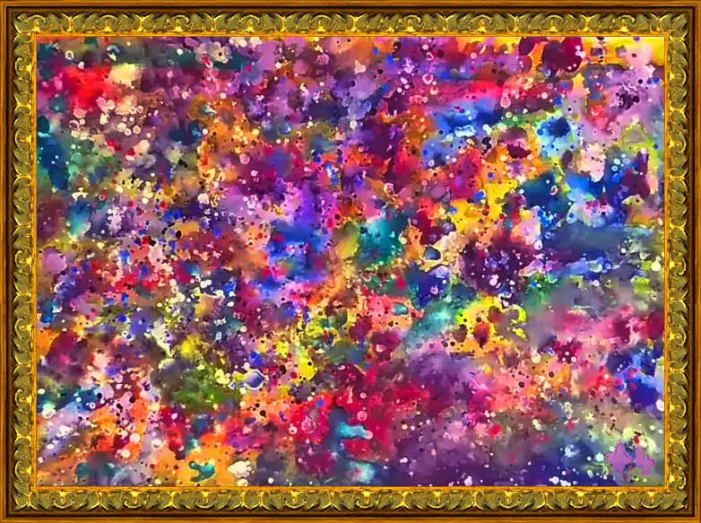
Erblühen
2˚⋀⋁∷∷˚
Wie einzigartig schön du bist,
ich kann es nicht ganz fassen.
Denn, steh ich neben dir, so ist’s,
als könnt’, ich alle Sorgen lassen.
In deinem Innern, wird’s wohl sein,
tausende von Sonnen, die da glühen.
Ich träumte, ein Gedanke wäre mein,
wo deine Liebe liesse mich erblühen.
Tief trunken
3˚⋀⋁∷∷˚
Seit mich einst gütig Liebe traf,
bin ich nach oben, gut gesunken.
Ahnte nicht, welch grausamst Straf’,
bin jetzt nüchtern, und doch trunken.
All mein Sein
4˚⋀⋁∷∷˚
Du erfüllst wahrscheinlich schon seit ewig Zeiten, all mein menschlich ganzes Sein.
Doch du warst noch nie so schön wie gestern, so offen tief für mich, so lieb und rein.
Deine Sachen
5⋀⋁∷∷
Wenn ich morgens bin am Wachen,
sind deine, meine schönsten Sachen.
Lieb’ Gedanken, ein so hübsches Lachen,
mich zum Eigner höchsten Glückes machen.
Die Liebe
6˚⋀⋁∷∷˚
Die Liebe ist, die Macht die klingt,
in Freude stark, auf höchsten Wellen.
Kräuselt sich, und will, dass ihr gelingt,
das Gut, den Geist, sich wahr erhellen.
Küsschen für dich
7⋀⋁∷∷
Wie stark Glück, so unerschrocken,
sind meine Augen, nie ganz trocken.
Mein Herz, dir gütig lachend schlägt,
auf deine Stirn, liebst’ Küsschen trägt.
Zu sichten eher kaum
8˚⋀⋁∷∷˚
Schön dies Ja, was glücklich kennt,
kaum zu fühlen, so schnell es rennt.
Jedoch nur im Kopf, im klugen Raum,
eilt es fortan, daher zu sichten, kaum.
Streng mystisch
9˚⋀⋁∷∷˚
Wenn dein Herz dir geht verloren,
fällt es hin, wo anders wird gezählt.
So haben manche gut geschworen,
streng mystisch, sich so Liebe wählt.
Valentinstag
10⋀⋁∷∷
Ein paar Staben für Verliebte,
ehrlich’ Küsschen, jedem Lieb.
Doch, mein Herz, du mir Liebste,
bei einem Gruß, nur ständig blieb.
Sonne
11˚⋀⋁∷∷˚
Weil du mir bist, wahr die allergrösste Sonne,
entschwindest du so nie, an meinem Horizont.
Als eine Art, gedanklich Achse reiner Wonne,
trägt es so schwer, ’gen deines Herzens dort.
Vertraut
12˚⋀⋁∷∷˚
Wenn du weisst, in ein Paar Augen,
mehr wie je, du dir einst geschaut.
Was auch sollte, solches taugen,
weiss bloß wer, ist mit’ vertraut.
Monibärilinischer Knoten
13˚⋀⋁∷∷˚
Schuhe binden ist nicht schwer,
so Moni, sie könne dies sehr.
Fast verboten, so Opa Bär,
aufzukriegen, wohl nie mehr.
Und er zeigt auf seine Schuhe,
erinnerte, beim Öffnen, welch’ Mühe.
Besonders diese mysteriösen Knoten,
eigentlich sei so etwas, wirklich verboten.
Jetzt kommt Oma Lina, schaut auf das Gebinde,
da schimpft, was zeigst du bloss für Zeugs dem Kinde.
Dies sei der besondere, monibärilinische Knoten, verboten..!
Oma ihre Schere holt, und sei froh, müsse sie uns nicht benoten.
Sind echte
14⋀⋁∷∷
Da schimpft der achtjährige Max, nach wohl tiefer Überlegung,
diese Mädchen, schieben immer so Spielzeug-Kinderwagen mit,
als wie es echte Kinder wären, kriegen sie aufmerksame Pflege.
Sind echte.., weiss Anna, können auch weinen, spüren ihre Hege.
Nur Plastik, ruft Max! Ja und, jetzt Anna, du ja schliesslich auch..,
Augen bei der Puppe, viel mehr echter, und gelber auch der Bauch,
würde, von genaueren Untersuchungen echt abraten, ihm anvertraut.
Nun Max unsicher; warum sich Puppe bloß in eine Richtung schaut?
Weil sie sich konzentrieren könne.., weiss Anna, schon fast empört!
Sei eben schlau, nicht wie er, der nicht mal wisse, Puppe alles hört.
Wahrscheinlich kriegt’ sie am Ende noch Kinder.., albert Max herum.
Ja, sagt Anna, aber nicht von dir, weil sie sei, eben auch nicht dumm.
Schwan machte Unfug
15˚⋀⋁∷∷˚
Wo Schwan Egon, den kleinen Max in die Flucht schlug,
musste er lange weinen. Das Federtier mache nur Unfug.
Schnappe nach seinen Beinen, Armen und sogar Fingern!
Nur Mama Rosas Küsse, konnten diesem Max noch lindern.
Jomba summend küsste
16˚⋀⋁∷∷˚
Fünkchen entnervt, Jomba nicht recht wisse, wie richtiges Küssen geht,
obwohl sie schon dreimal, es ihm zeigte, er es einfach nicht gut versteht.
Mache jeweils seine Augen zu, und fange an zu summen, wie eine Biene.
Als ob sie ihm nicht hübsch genug wäre, mit dem echt was nicht stimme.
Der solle woanders mit geschlossenen Augen summen, frech ihr dies sei.
Habe wohl zu viele Filme geschaut, & mit seinen Händen, sei er fast zu frei.
Darum sie nun erst nächstes Jahr, im Kindergarten, Küssen versuchen wolle.
Dort, habe sie gehört, wäre man nicht so kindisch, sei mehr wie richtige Schule.
Junge Seele
17˚⋀⋁∷∷˚
Dada duda, Tata blau,
Meta Mama, mächtig Frau.
Entsprungen Leben, keine Zeit,
will alles sehen, will geh’n bereit.
So, trap trap trap, schon wieder fort,
kommt erst zurück, vom nächsten Ort,
wenn alles Wissenswerte, wahr geschaut,
eilt’s zurück, dem neuen Wissen anvertraut.
Jauchzend lacht, dreht Pirouetten über Stunden,
fühlend Freude, wahres Glück ins jetzt gebunden.
Aus diesen Augen strahlt uns ganz die frohe Kunde,
durch sie gefühlt, wir messen erst den Wert der Runde.
Pilze suchen
18⋀⋁∷∷
Gestern war ich Pilze suchen,
mit Oma Lina und auch Opa Bär.
Im grünen Wald, mit hübschen Buchen,
fand ich einen Steinpilz, der war schwer.
Zum Glück hat Bär ihn mir getragen,
und Oma Lina gab er einen Kuss.
Rehe kann man nichts fragen,
weil jedes schnell fort muss.
Und der Fuchs, ein frecher,
hat uns bisschen erschreckt.
Er schleckte an einem Becher,
hat sich im Gebüsch, gut versteckt.
Am Ende, wir hatten 12 Pilze gefunden,
spazierten im Wald, gut über zwei Stunden.
4 Rehe geschaut, kurz mit Fuchs gesprochen,
und abends, die Pilze, haben sehr gut gerochen.
An der See
19˚⋀⋁∷∷˚
Die Sonne spiegelt ihre Strahlen,
Füsse baumeln, kreisen, fangen sie.
Über Wasser, dreissig Zehen malen,
dies was nährt, die geistig’ Batterie.
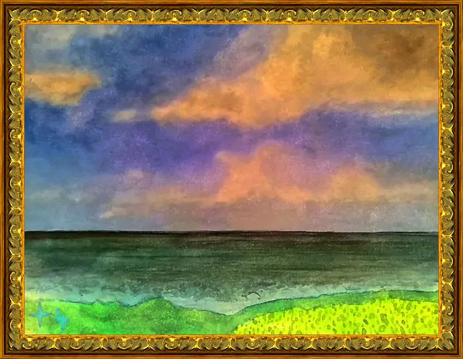
Haare am Ohr
20˚⋀⋁∷∷˚
Da spricht zu mir die vierjährige Melanie,
Wäääh, du hast ja Haare am Ohr, igitt iiiii.
Verflixt, wo kommen solche denn jetzt her?
Solches wisse Melanie, sei ihr nicht schwer.
Wollen bestimmt nicht länger im Ohr wohnen,
kämen darum auch ja raus, um sich zu schonen.
Ja, Himmel, da haben’s nun deine Haare wirklich gut,
weil keines raus dir schaut, oder ist für Haare verfrüht?
Nee, sind eben alle drin, im Ohr.. Aha, jetzt machts mir Sinn..
Wollen gar nicht raus, sähe ja sonst aus.., wie bei mir, ein Graus!
Wie ist es da mit Haaren am Schopf, haben’s die nicht gut im Kopf?
Die sind doch von Geburt an dran, wie ich nun solch’ nicht wissen kann?
Was soll ich denn jetzt machen, mit den Haaren reden in den Ohrbereichen?
Ja, weil wenn sie denken, es wäre besser drinnen, sie sich würden dann besinnen,
bald ich sie so draussen, nicht mehr würde sehen, so jedes nach innen wünschte gehen.
Nun will ich also tun, und die Melanie will schauen, ob wir auch gewinnen, Haars Vertrauen.
Lego
21˚⋀⋁∷∷˚
Anna meint, dieser Modi, könne überhaupt kein Lego,
wie der zusammenbaut.., also echt das traurig’ Ego.
So, sie ihm kund tue, es fehle der singende Brunnen,
er meint, sei eben Flugzeugträger, und die brummen.
Oder bei der Elfen-Burg baue er sich immer Kanonen,
die ihm anscheinend bis zur Sonne schiessen können.
Nein, der kann echt kein Lego, müsse man eben sehen.
Als ob die Elfen nicht ahnen, wie echte Schüsse gehen.
Nette Sachen
22˚⋀⋁∷∷˚
Wo kommen die Gedanken her?
Wieso sind Steine meistens schwer?
Was drängt das Herz zu jedem Schlag?
Wieso es dies sekündlich tut, ohne Vertrag?
Wer weiss, ob gar Wolken nicht auch lustig haben?
Vielleicht besprechen Bäume, wie sie Vögel tragen.
Ganz sicher sind Kühe, hervorragende Musikanten.
Auch die grossen, heissen glaub ich, Elefanten.
Enten scheinen immer etwas zu besprechen.
Pinguine auch, gemeinsam doch in See stechen.
Und ich glaube fast, alle sich nur so wollen machen,
weil, sie sind geliebt oder aus gar ähnlich netten Sachen.
Schulreise
23˚⋀⋁∷∷˚
Auf der Schulreise war so schön,
haben sehr viel Hübsches, gesehen.
Mit diesem Schiff, unter leichten Böen,
konnten wir, alte Segelvölker verstehen.
Monika ist ihr Brot, ins Wasser gefallen.
Ein Mann in Uniform gab dann lieb seins.
Auf diesem Schiff konnten wir auch gut malen.
Der Kapitän, durfte ein Bild wählen, er nahm meins.
Und später, sind wir mit der Seilbahn, vor dem Essen,
so schlimm steil auf diesen Berg hoch geschwebt.
Ich denke wohl, dies werd’ ich niemals vergessen.
Auch die Aussicht oben hat staunend bewegt.
Ja, und runter, hat uns Hr. Dodio chauffiert,
mit einem Car, der älter war wie selbst er.
Fr. Marie hat uns noch einen O-Saft offeriert,
und unsere Beine waren ganz schön schwer.
So süss
24˚⋀⋁∷∷˚
Ich kenn’ ein Mädchen, das lacht so schön,
brummelnde Freude, da jeder will’s sehen.
Ich schaut’ ein Mädchen, das hat gut Macht,
ist freches, verschmitztes, kurz süss es lacht.
Ehrlich Küsschen
25˚⋀⋁∷∷˚
Immer, wenn du Müttern gibst,
dein Küsschen, weil du sie liebst,
freut auch glücklich Herzen nebenbei.
Doch, so ehrlich Küsschen, machen frei.
Krone der Geschenke
26˚⋀⋁∷∷˚
Wenn du Pyjama kriegst, bist du geliebt,
auch wenn geistig, dir wer eines gibt.
Bei Socken, gar genau das gleiche,
dort man Liebe spürt, ja weiche.
Bei Geschenken, die gut wollen,
darf sie Freude stets auch holen.
Wie bei einem Brumbi Paja Hopp,
oder Berg, was welche nennen Top.
Ein Pyjama, als Krone der Geschenke,
so auch, die Nackedei dir liebst, bedenke,
wie ein Bär bist eingepackt, oder eine Ente,
je nach Sujet, darfst alles sein, ist das Größte.
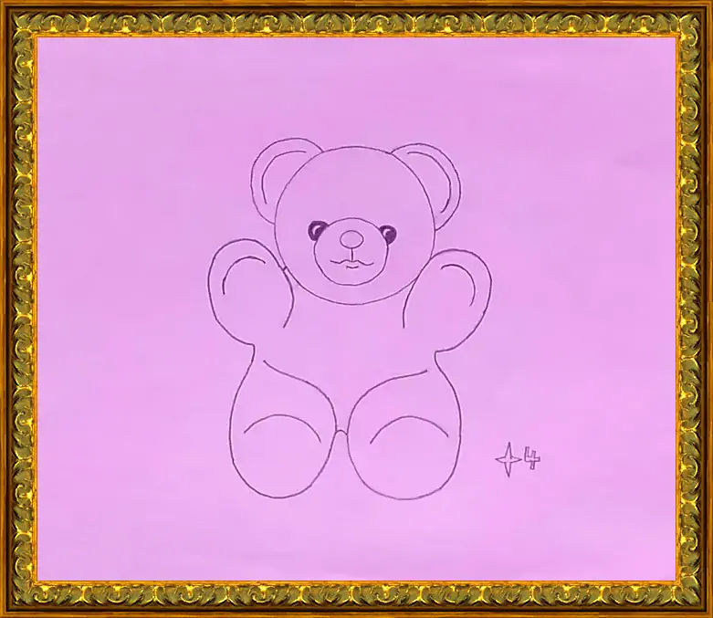
Fasnacht
27˚⋀⋁∷∷˚
Ein Fisch da schwamm im Schnee zum Pol,
käme aus der Schweiz, war ihm drum wohl.
Traf so einen Wal, aus dem Tessin, einem Tal,
fragte ihn, ob er’s hier, nicht auch fände schal?
Schon wie bisschen flach, gar kein einzig’ Dach,
kämen bloss zum Spielen, Meeresbodenschach.
So der Wal, namens Geromin, sowie Fisch Peter,
spielten Schach, in Tiefen, von rund 4000 Metern.
Aber auch ein Krebs, namens Egon, war hier schon.
Hatte Ärger, müsse nehmen gar Sardellen, wie Lohn.
Trudi, das Seepferdchen schlicht, freute sich so licht,
dass Egon, wie der Wal, so auch Peter, wussten nicht,
ob sie da noch am Pol. Trudi lachte, hauchte warten,
kam ein schlimm Erwachsen, wollt’ seh’n Fahrkarten.
Weil Mütter hatten welche bei, merkte ich so schnell,
diese Kinder, haben mir da wohl geflunkert, aber grell.
Echte Träume
28˚⋀⋁∷∷˚
Wenn du wieder träumen kannst,
dich an deine Zukunft lieb erinnern.
Wenn du wieder einfach Freude fühlst,
ohne gar tiefgründig nach Wissen sinnen.
Dann darfst du alles, was du magst, auch tun,
niemand mehr im Lebensfeld der dir wehrte nun.
Es doch alle freut, wenn du uns lachst, es weitergeht,
ganz besonders mich, der dich durch Liebe nur versteht.
So werden Blumen selbst auf kargem Boden, gut gedeihen,
werden Träume unserer Kinder, die ganze Erde ehrlich weihen.
Und sie werden alle, sich nur gut durchs Leben mächtig wissen,
diese echten Träume, nur in liebend’ Herzen, dürfen spriessen.
Harmonia
29˚⋀⋁∷∷˚
Die kleine Harmonia schimpft, ihre Eltern hätten nie Zeit,
ständig sie kuscheln wollen, hätte sie also langsam leid.
Kinder hätten ein Recht auf Erziehung, so Harmonia weint.
Worauf der Papa, für Eifersüchteleien, sei hier niemand bereit.
Jaaaa, ständig ihr küsst, wieso dies bei Erwachsenen sein müsse,
niemand wo sie sonst kenne, sich überbringe der gleich viele Grüsse.
Seid also echt peinlich, schnaubt rum, wie zwei verliebte Kamele, ehrlich.
Jetzt muss Mama lachen, geliebt sein, sei eben wirklich sehr beschwerlich.
Danke Kraft
30⋀⋁∷∷
Oma Lina macht mir einen Sirup,
aus roten Beeren schmeckt so gut.
Schlürfe ihn gern zum Kuchenstück,
und Opa Bär weiss, der Saft macht Mut.
Ja, unser Opa, heisst nämlich gar nicht Bär,
wir ihn nur so rufen, da er ist wie einer schwer,
meinte Oma Lina, oder weil er sei, gleich etwa hell,
aber Opa Bär gar schwört, er ist nur, wie einer schnell.
Er sei sogar viel mehr schneller, wie der Kater Sebastian,
dürfte sich aber nicht so beeilen, wegen, seinem Rücken dann.
Also, ich denke, Bär ist schnell, weil er abends, selten leuchtet hell,
Lina reicht uns lieb Saft, Bär sie dann immer küsst, spricht danke Kraft.
Bester in Algebra
31˚⋀⋁∷∷˚
Als der Tino, der ja sonst eher etwas schmächtig,
vom 10 Meter Brett springen wollte, war es prächtig.
Sprang die 12-fache Schraube, und 24 Salti, echt wahr,
Bester in Algebra zu sein, schien jetzt ein Vorteil, ganz klar.
Sabine weiss
32⋀⋁∷∷
Costa sagt, Griechen sind die besten.
Ali meint, Äthiopier aber die schnellsten.
Lee spricht, von seinen gibt es am meisten.
Hiatato weiss, bei uns Zuhause alle viel leisten.
Veronika sagt, ich habe von uns die schönsten Haare.
Anna meint, ein Nagellack, ihr besonders gut steht, der Klare.
Kirstin fand raus, bloss in hohen Schuhen, sie sexy gehen kann.
Monika beteuert, nur gute Kleider, ihr erst wirklich stehen dann.
Paolo weiss, unsere Kinder sind kleine aber gefährliche Wesen.
Manuel beruhigt, er im Voraus, in Ihren Augen könne lesen.
Elke, Mutter von Edi, gute Spielsachen verleiden ihnen nie.
Sabine ja meint so, selbst Alte bei gleichen seien froh.
Backside Flip
33˚⋀⋁∷∷˚
Wo Hyper zum Geburtstag einen Schlitten bekam,
stellte er also gleich fest, kein Board.., welch’ Scham.
Eltern ja schlecht merken, wie bescheuert ihr Hirn kann.
Wie soll einer den Backside Flip, mit Schlitten, stehen dann?
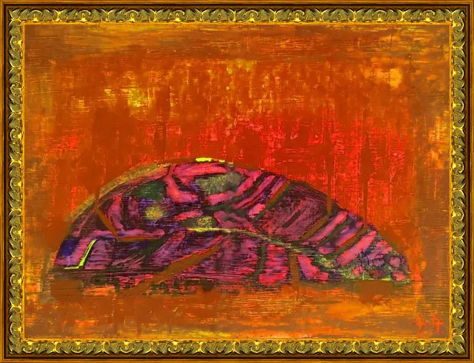
Murmelkönige
34˚⋀⋁∷∷˚
Ich kann am besten murmeln, spricht Pico.
Stimmt nicht, fordere dich heraus, meint Nico.
Gut so, hier die Regeln, jeder hat drei Schüsse.
Und wir schiessen auf die hinten liegenden Nüsse.
Doch als sich ständig eben beide gleich gut waren,
sagte Nico, wir müssen uns da eben sein im Klaren.
Wir beide sind Murmelkönige, bald glücklich sie sahen.
Also nur zum Spaß sie spielten, da beide Könige waren.
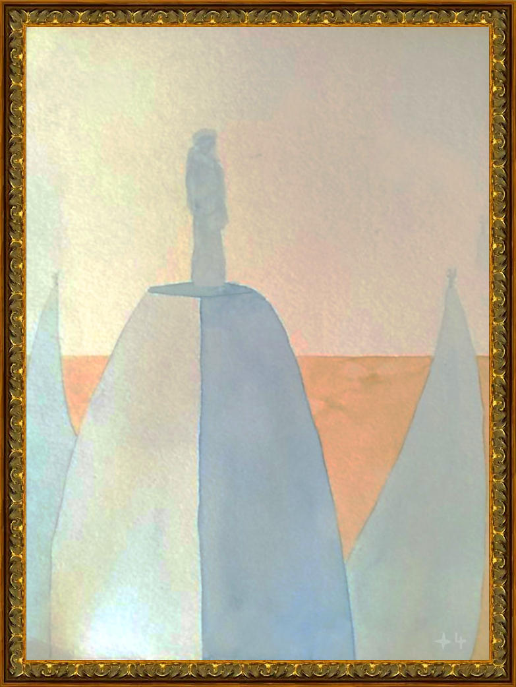
Tut Tut
35˚⋀⋁∷∷˚
Dieses was du nennst, das eigen Denken,
ist des Menschen, wahr treueste lebend Gut.
Du nur solchen Räumen, Gold kannst schenken,
in Freude, als ein Tschi Tschi Puh, mit auch Tut Tut.
Oma Linas Geburtstag
36˚⋀⋁∷∷˚
Als Oma Lina bald Geburtstag haben wollte,
Opa Bär nicht wusste, was er geben sollte,
mussten wir ganz schön lange denken,
was denn Lina mag, beim Schenken.
Und keiner weiss, wie alt sie wird,
Bär meint unendlich, sie nie stirbt.
So, wir was Gutes, schenken müssen,
sonst, werde er, da schön lange büssen.
Mir fiel ein, als Oma zu mir sprach beim Laufen,
wie schön es wäre, könnte man Bär Verstand kaufen.
Und zum Glück der Bär gleich wusste, wo er den herkriegt.
Auf seiner Schatzinsel, hätte er ihn vergraben, als er noch gesiegt.
So kam Linas Geburtstag, und sie fragte 12 Mal, was ist da drin Bär, sag.
Es war ein hübsch’ Gefäss, eine Schale voll mit Liebes-tränen von Bär, ganz klare.
Lina sich bedankte, fand es lieb, eine Schale voll Honig, ihr gerne in der Küche blieb.
Nun, es waren ja echte Liebes-tränen, Bär aber darum bat, ihr besser dies nicht erwähnen.
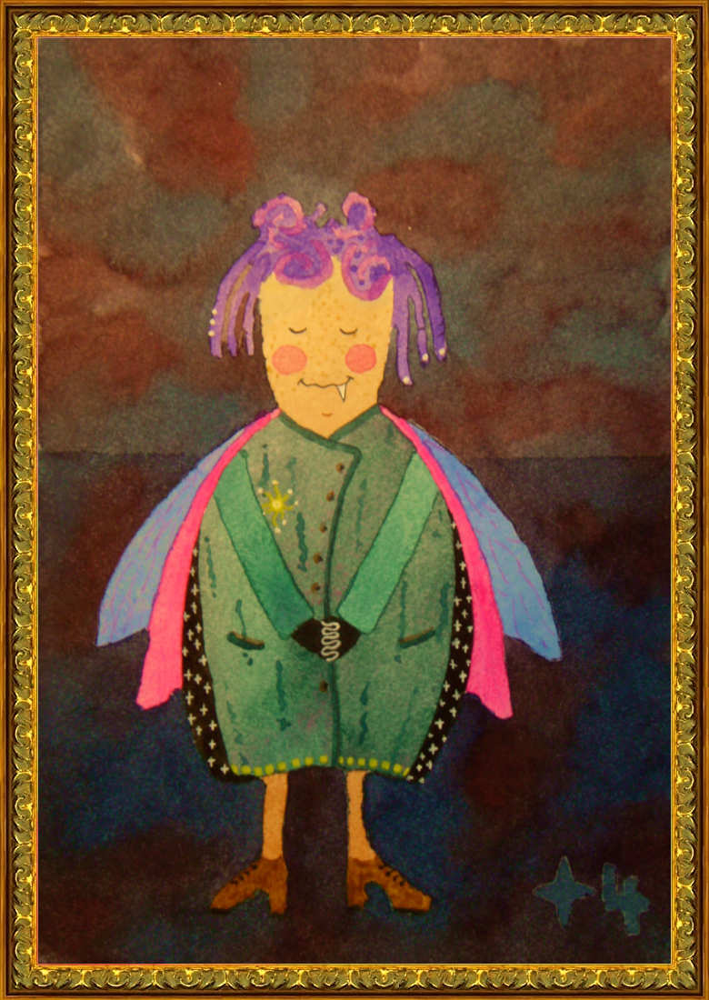
Neulich beim Essen
37⋀⋁∷∷
Fünkchen sagt, Liebe ist, wenn Menschen machen, was sie will,
weil bei denen, die nicht so können, wird es ihr schnell zu viel.
Dies sei eben normal, müsse man verstehen, sonst wird’s fatal.
Spricht zu Albert, gib schon her die Limo, Herrgottnocheinmal.
Doch Albert nun strikt weigert, jeder hätte ein Glas bekommen,
sagt’s, und hat schon beide Augen richtig schlimm verschwommen.
Ich will doch nur probieren, beruhigt Fünkchen, wirst nichts verlieren.
Albert solch Probieren ablehnt, weil sehr wenig, zurück in Becher kehrt,
schlug vor, ich tue dir einen Tropfen in den Mund, von mir aus jede Stund’.
Ab da wollte Fünkchen, nicht mehr mit dem Doofi spielen, wurde ihr zu bunt,
versprach, auf dich ist kein Verlass, und spielen mache überhaupt keinen Spaß.
Nun Albert dacht’, Fünkchen sei viel hübscher, so sie nicht, auf fordernd macht.
Schneller wie Gedanken
38˚⋀⋁∷∷˚
Was könnte schneller sein, wie ein Gedanke,
fragte einer, der in der Meinung schwanke.
Vielleicht dies, was so Gedanken mache.
Ideen vor Gedanken, der geistig’ Sache.
Nur Schokomilch
39˚⋀⋁∷∷˚
Er sei der letzte der Sterne Sieben,
und werde gleich unzufrieden.
Schoko Milch, und nicht Tee,
solle ihm bringen, eine Fee.
Ich schon Fee, aber schau,
Schoko macht dick, Tee schlau.
Dann er auf meine Schlauheit baue,
solle nur Tee bringen, so ich mich traue.
Dann halt
40˚⋀⋁∷∷˚
Aber Eure gutartig Redlichkeit, wie können sie nur denken?
Es ist wohl die eigene Verspieltheit, die man möchte schenken.
Ach so, eigen’ Vielfalt, dann soll’s recht sein, wirklich nicht gemein?
Nein, Eure Unermesslich Messlichkeit, Verspieltheit, ist immer fein.
An der See Eis schlemmen
41˚⋀⋁∷∷˚
Lass uns an die hübsch’ See gehen, ist so schön da,
wünscht, das freudig, sehnend’ Wesen, genannt Anna.
Solch Klug’, muss man Opa Bär ja nicht zweimal sagen,
weil es ihn oftmals, auch gerne an selbige See will tragen.
Dort er könne Vögel beobachten, die seien ihm nun schön,
oder Fische die nach Luft schnappten, wollte er auch sehen.
Und so es zu heiss wird, geht Opa Bär, Eisschleckzeug kaufen,
Tun uns dann bisschen beeilen, da Eis, gar rasch will zerlaufen.
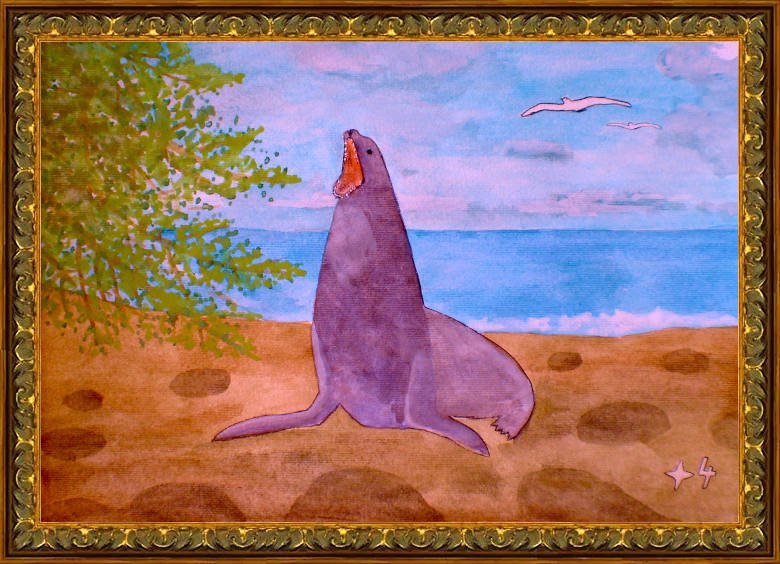
Ich & Du
42˚⋀⋁∷∷˚
Weil wir beide sind noch Kinder,
welch groß’ Glück, doch wohl klar.
Entdecker Seelen bloss frohlocken,
nichts Nachgeahmtes, geistig wahr.
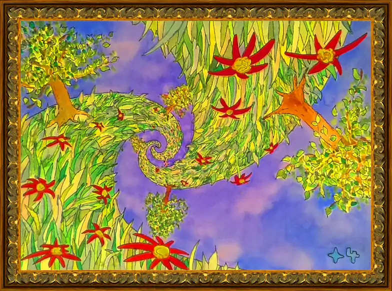
Kind mit Macht
43˚⋀⋁∷∷˚
Die durchdachten zeitlich Räume, ohne jedwed’, ander’, wertend Zeit.
So nur aus dir, doch wohl aus Freude, stolz zu Recht du Kind, mit Macht.
Duftschiffe
44˚⋀⋁∷∷˚
Als Oma Lina, Kuchen machte,
ich, die Zeit, mit Bär verbrachte.
Da spielten wir, Welten vermuten,
und dieses was sie tun, im Guten.
Müssen aber kleine, solche sein,
so, sie kein Auge schauen kann.
Sonst ist Spiel meist zu leicht,
die Unterhaltung eher seicht.
Ich erriet im roten Sirup, von Lina,
eine Stadt, die mächtig schön ist da.
Und Bär, hat im Blumenstrauss gesehen,
214 Duftstoffe, sekündlich in Arbeit stehen.
In Kater Sebastians Augen wohnen 12 Meere,
sind aber alle ohne Schiffe, wie in einer Erdbeere.
Doch im Duft, der jetzt aus der Küche kommt, so Bär,
seien viele Boote, beladen mit Oma Linas Liebe, schwer.
Und wir spürten wie Duftschiffe, in der Nase einen Hafen bauen,
dies sie machen, weil spätere Kähne, dem Riechorgan auch schauen.
Auf jeden Fall sind wir dann mit einem Segelschiff, rüber zu Lina gefahren,
hatten guten Wind, und Oma lobte, ahoi ihr Seebären, wieder da, nach Jahren.
Himbeereis
45⋀⋁∷∷
Wo der Anna, ihr feines Himbeereis, auf den Boden fiel
war klar, der Eismann war schuld, zu schlecht angedrückt.
Zum Glück er uns gar glaubte, Anna schon komisch schaute.
So haben wir es dann geregelt, er neu angedrückt dieser Flegel.
Chlorwasser
46˚⋀⋁∷∷˚
Tetafu der Zierfisch, meinte, Chlorwasser mache ihm nichts.
Seit er ja im Hallenbad überwintert habe, wegen des Lichts,
fände er den Geruch, gar sympathisch, richtig zierfischmäßig.
Ach was, schimpft Mensch Rudi, zu viel Chlor sei nicht zulässig.
Tiger Weisse Pfote
47˚⋀⋁∷∷˚
Der Tiger Weisse Pfote lieb schlenderte umher,
erfand sich gute Spiele, die was gaben her.
So ersann er sich das Blätterfangen,
zärtlich sein mit Tigerwangen,
freundlich spielen durch die Auen,
stark bestärkte Pfotes Selbstvertrauen.
Bald so eines Tages konnte er sich schauen,
was Müttertigerfrauen, ihm würden anvertrauen.
Tröpfchendusche
48˚⋀⋁∷∷˚
Aquin der Wasserfall, ein mächtig’ Strahl,
lacht mit Meise Pia, er sei ihre Badewahl.
Ja, so Pia, seitlich er gar zärtlich sprenkelt,
und das Wasser frisch, nichts was ihr ekelt.
Hätte einen Stein, der also Vorteile biete fein,
auch für Meisen, die wie sie, seien eher klein.
Pia es dort liebe, ihre Federn einfach strecken,
da sie feinste Tröpfchen kühlend so benetzen.
Tschits itschits
49˚⋀⋁∷∷˚
Trickel, trackel, Pipalmatz,
pfeift laut, der kleine Spatz.
Tschits, itschits, ich dich lieb,
als Übersetzung lange blieb.
Leuchtmeer
50˚⋀⋁∷∷˚
Wo abends am Sommerfest, der Strom ausfiel,
rief Vampi von der Band, Licht in die Höh’, das gefiel..
So alle Glühwürmchen geleuchtet hätten, sagt Bruno freudig,
und Vampi A Kapella sang, heulte wie ein Wolf, war richtig schaurig.
Krombori
51˚⋀⋁∷∷˚
Krombori, der hübsche Schlittenhund, war ein sehr flinker,
er wusste, als Hund, darfst sein wie ein Hase im Winter.
Schnell, klug, weich, und natürlich perfekter Sprinter,
dann könne man sein, was man wolle, auch Dichter.
Er zum Beispiel mag Wasser in seinen Gedichten,
Aauu, wuu, wuwu, so richtige Hundegeschichten.
Habe mal geschrieben, Pfote weich wie eine Fee,
im Winter Eis, doch gleichen Orts, sommers See.
Links, rechts, nach Schneeflocken ich schnapp’,
so ist gütig Wasser, niemals gänzlich knapp.
Und im Sommer fange gut ja Regentropfen,
erzähle ihnen, von so dicken Wintersocken.
Im Schnee könne man halt richtig abrocken.
Ein Winter tue jedem doch den Atem stocken.
Gut, er fahre sich auch Snowboard, wie ein Eilbote.
Dies ihn echt erfülle, gebe ihm so eine besondere Note.
Hirschkäfer Blacky
52˚⋀⋁∷∷˚
Haiho Ha, Huohoua, so der Hirschkäfer, zu Auge, Maikäfer.
Und was soll dies jetzt heissen, bist du etwa ein Schläfer?
Huouaa, huohauooo, huouaao.. Ach so, es will dir stark weh?
Doch falsch, dies Hirschtier weinte, weil niemand ihn verstehe.
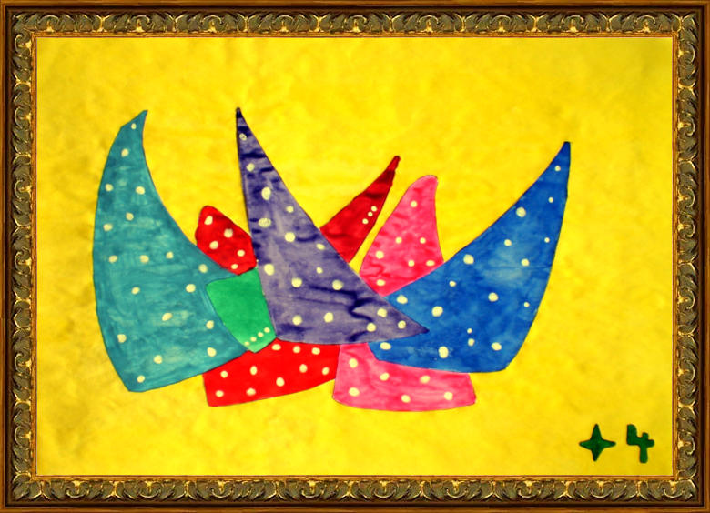
Ruru
53˚⋀⋁∷∷˚
Ruru, der alte Kirschbaumhund sagt, er möge keine Kirschen,
da sie auf ihn fallen, Blätter auch, können sich lautlos anpirschen.
Am schönsten sei es im Frühling, da es gut rieche, habe auch Schatten,
aber auch im Winter, könne man in aller Ruhe, Spuren schauen, oder raten.
Tinka bisschen verliebt
54˚⋀⋁∷∷˚
Jetzt, wo sich Hirsch Doipo, noch eine Tarndecke übergeworfen hat,
sah er ja, schon bisschen komisch aus, wir alle waren gänzlich platt.
Weil auf diese Decke, er sich 190 leuchtend Fliegenpilze hat gemalt.
Sei also wie eine täuschend echte Pilzgruppe, reich an Stolz er prahlt.
Aber deine Läufe, nun Igel Bruno stellte fest, seien so, gar übertrieben,
12 Pilze übereinander, so etwas hätte es in der Natur niemals gegeben.
Ah, sagt Doipo, dies anders gehe, man im Grass, nur den obersten sehe,
und wenn der Jäger selbst sich legt, dann nur die untersten Pilze erspäht.
Also recht jägersicher.., nur im offenen Gelände, sei besser, ohne Pilzdecke,
da müsse man sein realistischer, nehme D4 Grashalmüberzug, für die Strecke.
Hirschkuh Tinka, ärgert jetzt, sei ein richtiger Spinner, sehe aus wie eine Ziege,
Manchmal er ja stundenlang, wie aus Wagemut, drei Meter hinter so Jägern liege.
Hase halt schneller
55˚⋀⋁∷∷˚
Wo Hase Hoppel Fellsanft sah, wie die meisten Frösche springen,
meinte er lakonisch, wirklich nicht zu gebrauchen, für weite Strecken.
Schaue aus, als wollten sie bei jedem Sprung schauen, will es gelingen.
Hasen hingegen, könnten innert Millisekunden, nach wo immer, sich recken.
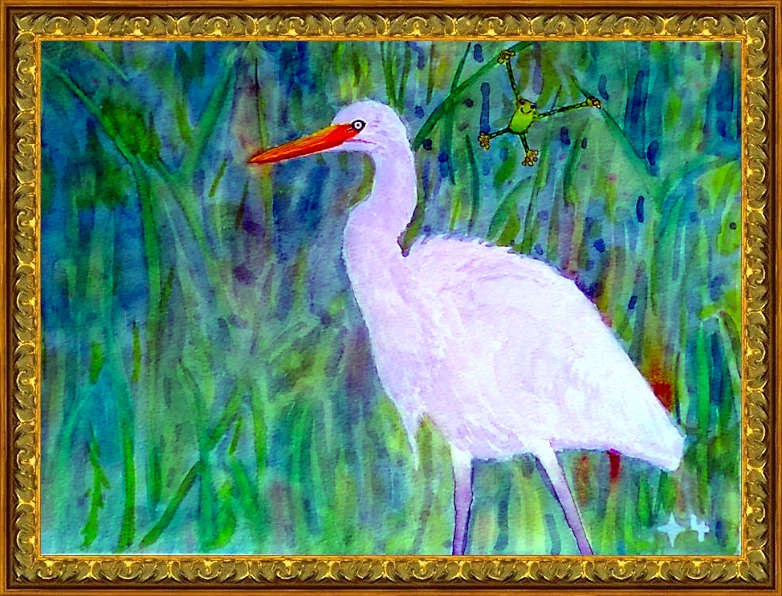
Hornisse Berta
56˚⋀⋁∷∷˚
Als Wespe Helga, die Augenbrauen hochzog,
wusste sie genau, was da jetzt auf sie zuflog.
War Hornisse Berta, eine so schlimm starke,
flog aber vorbei, ohne Brille nichts erkannte.
2 Giraffen
57˚⋀⋁∷∷˚
Einmal als Giraffe Lisa nicht kam an das Laub,
ihre Schwester Verena, sich machte aus dem Staub,
dabei sie so gut, hätte können, den Ast nach unten biegen,
erzählte mir Lisa, und sie schien, auch ein wenig unzufrieden.
Auf jeden Fall dann abends, wo der Wildhüter kam, die Tränke giessen,
hätte er, unachtsam wohl, vergessen, das Fenster am Hänger zu schliessen,
und dieser, war voll Korn, einen kleinen Kopf zu haben, nun ein Vorteil, aber enorm.
Und es habe wirklich gut geschmeckt, da die Verena, sich hätte bloss am Glas geleckt.
Mensch weggerannt
58⋀⋁∷∷
Wo Wolf Dado, im Wald einen alten Schuh fand,
er daran roch, hat Mensch wie Bärengeruch erkannt,
und da Bären selten Schuhe tragen, Mensch weggerannt.
Dado mag Spuren lesen, dies dem Wolf, schärfe den Verstand.
Dermassen elegant
59˚⋀⋁∷∷˚
Wo Stute Heilmine, ihre Schuhe holte,
der Pupo, ganz schön stolz konnte.
Sie seien dermassen ihm elegant,
es raube einem den Verstand.
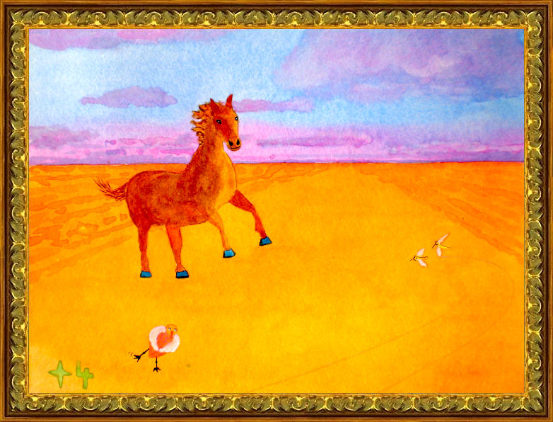
Dohle Inge
60˚⋀⋁∷∷˚
Als die Füsse von Dohle Inge erhielten einst neue Ringe,
von diesem lustig’ Vogelwart, der jeweils um sie springe,
sei ihr dies schon ein klein wenig, hoch zu Kopf gestiegen,
so die Taube Ulla, jedem sie gleich ihre Füsse bot zufrieden.
Gefährlich Blau
61˚⋀⋁∷∷˚
Wo die Tagesfliege Brummi, vom blauen Licht angezogen wurde,
flog der Domenikus, gleich voraus, es wurde aber seine letzte Stunde.
Und Brummi musste schauen, so man nicht jeder Begierde dürfte trauen,
Domenikus wusste, das Blau ist gefährlich, eher Brummi war geboren, ehrlich.
Nodo & Samaletta
62˚⋀⋁∷∷˚
Nodo der Grünwiesfant sagt, zu Igeline Samaletta,
Diese Beeren, ja äusserst bekannt für ihre tiefe Süsse.
Na gut, lacht Etta, dann mag ich von diesen dunkelblauen da.
So der Fant das Grass zur Seite bog, zeigte, wo sie nehmen müsse.
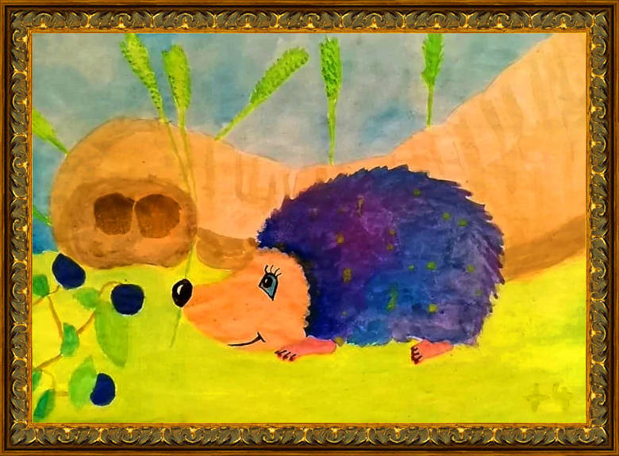
Hoppel & Toktok
63˚⋀⋁∷∷˚
Hoppel der Feldhase, und Toktok der Specht,
waren zwei Freunde, und dies war nur recht.
Der Toktok, Bäume prüfte, die Härte des’ Holz,
Hoppel gleich, in Feldern, Grass Tester mit Stolz.
Doch, als die Arbeit war getan, ihre täglich’ Taten,
hatten beide, das gleiche Sinnen, Geschichten raten.
Und dies, war ein schönes Spiel, so Hoppel erzählte mir,
Toktok eine Geschichte erzähle, und er, den Schluss wähle.
Sogleich darauf, gebe ihm der Specht da ehrlich zu erkennen,
ob er gut, geraten, und wenn nicht, dürfe er es ihm nennen.
Darauf erzähle der Hase, und der Toktok, sei die Spürnase.
Hübsch erzählte Geschichten, die sie am Tage sichten.
Toktok sprach, es sei manchmal kaum zu glauben,
was Hoppel in Wiesen, bekäme vor die Augen.
Aber auch was der Specht, oben, tue schauen,
Taten, denen nicht jeder Hase, würde trauen.
Ja, die zwei haben’s gut, in Ihrem Ratemut,
Dann will ich sie, auch nicht länger stören.
Toktok möchte wissen, was lebt in Föhren?
Bin weg, und kann Hoppel, nicht mehr hören.
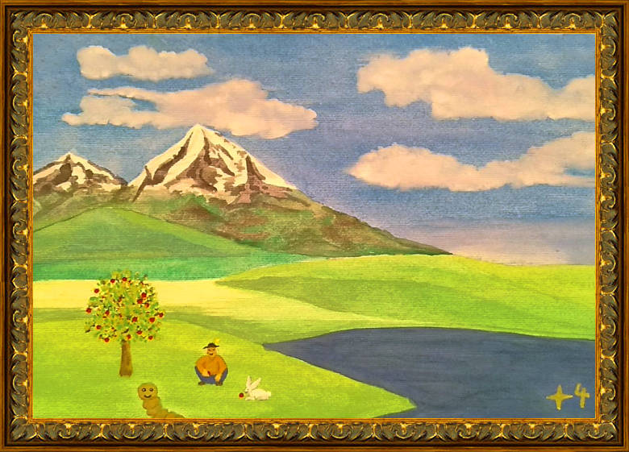
Fremdsprachkurs
64⋀⋁∷∷
Als einst, Dackel Tiefer Bauch, um neues Futter bat,
war ihm gut klar, es könnte aussehen wie Verrat.
Doch, dies trockene Zeug, bei allen gütigen Dackeln,
ab einer gewissen Zeiteinheit, einem die Ohren wackeln.
So, er da bedacht, aber bestimmt, in Metzgers Laden spricht,
’Wuwu will auch Stück Fleisch' Nun schauen alle, auf ihn schlicht.
Der kann ja reden, wie gefährlich, gebt ihm nur Trockenfutter, spärlich.
Verflixt, sich Bauch nun dachte.., der ganze Fremdsprachkurs, nichts brachte.
Schnappin & Biene
65˚⋀⋁∷∷˚
Schnappin, das größte Krokodil,
war so beschäftigt, sag ich dir,
weil er gehöre, zu einem Spiel,
darf Flüsse schützen, so er mir.
Wie Flüsse schützen, was ist dies?
So etwas, kenne ich ja wirklich nicht.
Er zeigte auf sein Schild, hier doch lies.
Ein amtlich vereidigtes Flussreich-Krokodil!
Du bist mir ja einer, und wofür gibt’s dich Kleiner.
Das Wasser, die Fische, auch Krebse, er eifrig erzählte.
Welche da trinken kommen, manche sich am Ufer sonnen,
gibt gar Menschen die Feuer machen, und so ähnliche Sachen.
Ei, ist denn dies nicht sehr gefährlich, wollte ich von Schnapp wissen.
Ja natürlich, sei man, aber seiner ehrlich, er nie würde, auf einen schiessen.
Ob er denn überhaupt was verdiene? Nein, mache dies nur wegen seiner Biene,
sie auch Kroko, aber Kosename Summtier, und sie mag es, so er schaut ihrem Tier.
Hypo spart
66⋀⋁∷∷
Hypo das Nilpferd,
wollte neue Schuhe,
geduldig sparte Geld,
hundert Wochen Mühe.
Doch als genug gespart,
gar Summe bald gebracht,
diesem der doch aufbewahrt,
so Treter, wo sein Herz lieb lacht.
Das Hypo fühlte Glück, endlich Schuhe,
gut bequem, auch eigenartig stark gebaut.
So möchte er nun sparen, zwar in aller Ruhe,
für diese eine hippe Hose, die er sich geschaut.
Kein Tauchertier
67⋀⋁∷∷
Als die Wespe Helga plumpste in das Bier,
nahm sie, ein Mensch, der Herbert, raus.
Fragte sie lieb, bist du ein Tauchertier?
Ach wo, meint Helga, hör auf, ein Graus.
Wie Schluckauf
68˚⋀⋁∷∷˚
Als die Raupe Maxi, bekam Schluckauf,
kam also wirklich niemand, sofort darauf.
Sie gar nicht echten Schluckauf hatte,
sich tanzte, zu ihrer Lieblingsplatte.
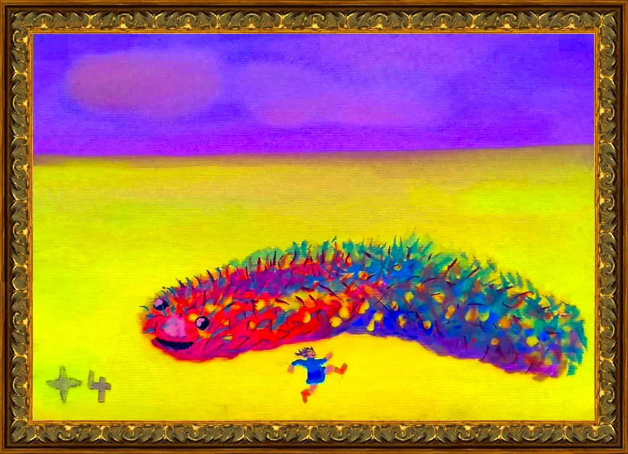
Mummel & die Waldtiere
69˚⋀⋁∷∷˚
Mummel der Jagdhund betonte, er fände es komisch,
Füchse, Hasen, selbst Fasane, seien mehr launisch.
Aber du bist Jagdtier, nun aufgebracht der Mensch,
und so was, könne er nicht gebrauchen, ganz ernst.
Jagdhunde, tun nicht spielen, schon gar kein Schach,
und während der Jagd am, allerwenigsten, Mummel, ach!
Also gut, kein Schach.., nun das Pirschtier, oh vergebe mir..
Genau Mummel, Fuchs fassen, Hase auch, nicht so aber Stier,
alles was mit einem Zaun eingefasst, dürfe eben nie, bejagt werden.
Mummel, auch nicht gebissen, geschweige denn, es würde noch sterben.
Klug’ Hund Mummel, sich nun dies hat gut gemerkt, sei schon nicht verkehrt.
Erzählte es weiter.., also viele Waldtiere, ein rot’ Absperrband, um Ihren Leib gelegt.
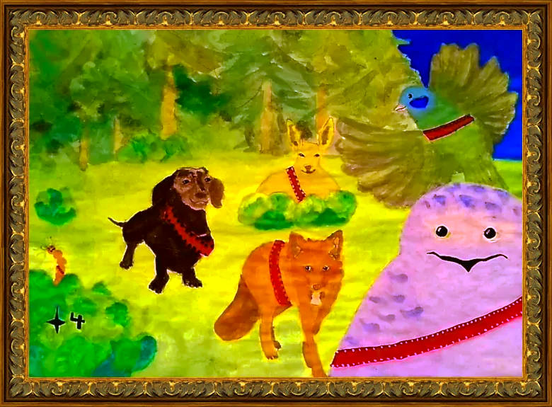
Gigagenial
70˚⋀⋁∷∷˚
Fisch Dame Elfriede, und selbst Gregor der Pudel,
halten sich gerne auf, bei dem Wasserfallstrudel.
Da mache es blubb, und gehe man rein, schwupp,
es einen gut drehe, bis zu 4 Mal, echt Giga genial.
Bubu & das Netz
71⋀⋁∷∷
Als Bubu, der Tiefseefrosch, um 6 Uhr 11, das fiese Netz sah,
schlug er sofort Alarm.., doch dies Ding, war schon zu nah,
riss gleich mit, ihre Unterwasserstadt, machte alles platt.
Und der Frosch sei nur mit dem Leben davon gekommen,
weil Medo der Rochen, ihn auf seinem Rücken mitgenommen.
Woher solche Netze kommen, kann sich echt niemand ausmalen.
Sardellen haben schon berichtet, sie aus der Luft, ins Wasser fallen,
und der Wal Tran, habe gar gesehen, wie sie selbst auf Boote losgehen,
diese sich aber wohl besser wehren können, schmeissen sie gleich ins Meer.
Ja, mit diesen Netzen ist schon schwer, wusste auch der Nominus, ein Tiefseebär.
Am besten wir stellen jetzt Wachen auf, die schnellsten Fische, passen gut auf, darauf.
Aber der Bubu wusste, man müsste mit den Netzen reden, wieso sie ihre Böden wegfegen.
Emma & Buffalo
72˚⋀⋁∷∷˚
Als der Bulle Buffalo,
die Hörner abgestossen.
Wusste Milchkuh Emma so,
einst, er zählte zu den Grossen.
Poncho & Gonzo
73⋀⋁∷∷
Poncho, ein gemeiner, ja hinterlistig’ Rabe,
stellt Wurm Gonzo, ein Lieber, diese Frage.
Soll ich dich fressen, du Ringel, hapa hapa?
Gonzo späht hoch, und trinkt aus, den Grappa.
Und meint zum Raben Tier, du bist wohl unklug?
Ich ein giftig Ringel, du besser gehst, er vorschlug.
Ach, wo, netter Versuch, so der Rabe, und frisst Gonzo.
Dem Tausendfüssler, jetzt bald genug, er will es eben so.
Und kaum gesprochen, der Rabe ihn gleich wieder erbrochen.
Pfui, Teufel, krächzte Poncho. Sei wie besprochen, erinnerte Gonzo,
Ja, Himmel, wie giftig bist du denn, und wozu will der Vogel sich wissen?
Wegen bösen schwarzen Raben, die Gonzo, so Manieren ließen vermissen.
Bernhardiner Heliopok
74˚⋀⋁∷∷˚
Der Bernhardiner Heliopok,
sieht alle Berge, jeden Stock.
Rettungshunde haben Klasse,
besitzen auch viel Eigenmasse.
Und, wenn der Pok, mal nichts tut,
wird er, lieb gestreichelt, tue ihm gut.
So, er schon vier Menschen hat geortet,
in drei Lawinen, sie mal wurden gefoltert...
Wieso rät Heliopok, immer noch, Vorsicht doch,
wer sei klug im Schnee, dem will es nie lang weh,
dies alberne schlimm ungeduldig, meist noch mutig,
fordere dann seinen Einsatz, und dies sei, unvernünftig.
Hamster Wuff
75⋀⋁∷∷
Hamster Wuff, hat ein bisschen, wie traurig,
Marie nun zwei weitere will, es sei schaurig.
Als Käfigtier, da wünschte man mitbestimmen,
sei wie eine Seilschaft, gleich Berge erklimmen.
Tja, ich als Katze, würde mich ab zwei Hamstern freuen.
Ja, solange du nicht im Käfig bist, so Wuff, sei zum Bereuen,
und dann bald zu dritt, was bloss sollte der Marie, dieser Schritt?
Die will doch euch bloss kuscheln.., sei froh, bist ja auch ein Wuschel.
Er ja nicht recht wisse, sie hätte ja noch diesen Hund, streichle ihn, eine Stund',
und so diese Hasen, die dürfen öfters raus, wie er, auf den hübschen, elterlichen Rasen..
Auf jeden Fall, will er in die Schule gehen, diese menschlich’ Laute, dann bald auch verstehen,
weil Marie, habe ihm nämlich mal gesagt, ’mmmmm sufooooo tutu booooo', oder hätte ihn gefragt.
Wal Tran
76⋀⋁∷∷
Gestern habe man auf Tran geschossen.
Diesen Wal doch, hätte fast Tränen vergossen.
Mit manchen Schiffen sei also echt, nicht zu spassen.
Dabei er schaute, ob man Kinder könne nach oben lassen.
11 Albatrosse
77˚⋀⋁∷∷˚
Ein Albatros kann nicht gut starten,
meist gar schaut wie skeptisch drein.
Doch wer diesen Flug kann erwarten,
sieht so einen, der schon fliegt sehr fein.
Und beim Landen gibt’s keinen größer’ mutig,
drei Überschläge mit zwei Rollen, kein Problem.
Leicht geschüttelt, schaut er unberührt gleich gütig,
und gemächlich schreitet nun zu seinen andern’ Zehn.
Kroko und Pferd
78˚⋀⋁∷∷˚
Sagt ein Kroko einem Pferd im Nil,
hast schon einen eignen dir da Stil.
Nun das große schaute so entzückt,
das Kroko dacht', das Pferd verrückt.
Tage später so in diesem großen Fluss,
denkt das Große, will es sprechen, muss,
und spricht zu Kroko, so dicht an sein Ohr,
dass es nicht vergessen möge.. Es schwor.
Nicht der Stil sei gar so eigen, ist der Bauch.
Da lachten beide, weil Kroko hatte einen auch.
Immer wenn sie sich dann lieb mal schauten,
liebes gar, in Ihren Bäuchen sie jetzt bauten.
So eine Liebe zwischen zwei Geschöpfen nun,
will Freude bringen, da sich beide ja nichts tun.
Was dem einen, auf den Magen würde schlagen,
könnte diesen anderen kaum durchs Leben tragen.
So haben beide sich mal wahrlich, gleich geschworen,
sich zu mögen, schrieben es auch gleich in alle Foren.
Dass Kroko, wenn in Liebe, sind so grausam mutig Tier,
würde ich dich nicht nur lieben, ahnte nicht, was du mir.
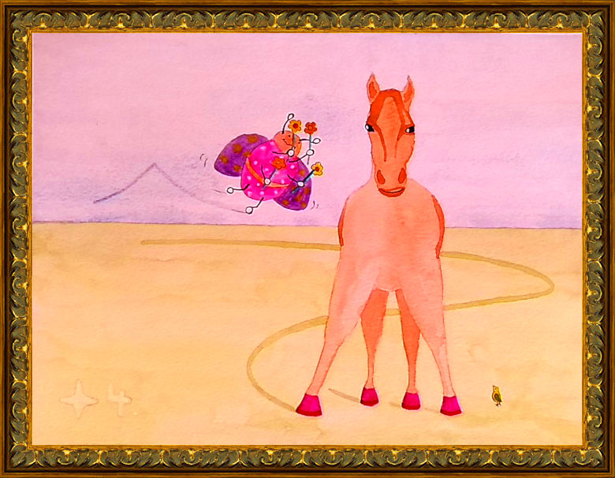
Dradu & Hupf
79˚⋀⋁∷∷˚
Der Rabe Dradu spricht zu Hupf,
einem Spatzen der an seinem Nest zupft.
Was machst du da an meinem Unterschlupf?
Notfall.. Brauche einen Strohhalm, Hupf einen rupft!
Bringe ihn später wieder, groß’ Spatzen Ehrenwort, so Hupf.
Jetzt will der Dradu aber schauen, was der Spatz möchte richten,
und tatsächlich.. es wurde eine Brücke bei den Tannen.. Ein Trumpf!
Für Ameisen, die der Hupf schon lange kannte, so der Rabe konnte sichten.
So flog er rasch vorbei, und krächzte ihnen lieb, der Halm am besten bei euch blieb.
Ja, danke Dradu, so der Ameisengeneral, auch so Hupf, tschi, tschi, sehr lieb auf jeden Fall.
Der Rabe erzählte alles seinen Kindern schlicht, die schon gewettet, ob der Hupf Wort bricht.
Da wollte Dradu ihnen anvertrauen, wenn sie mal groß sind & fliegen können, gehen alle schauen.
Kleidergrößen
80⋀⋁∷∷
Wenn du durch die Strassen kreist,
und selbst groß bist, wie eine Hummel.
In da vielen Kleiderläden auf Granit beisst,
so, du als etwas kleine Biene, suchst Fummel.
Neulich bei Manfred
81⋀⋁∷∷
Also seht ihr dort unten dieses Eurostück am Boden,
so der Ameisengeneral, wir stemmen es nach oben,
zum Shop Besitzer und verlangen lecker Zuckerstange.
Also nun taten, oben aber wurde ihnen angst und bange,
weil der Shop Besitzer, ein gewisser Manfred, war strenger,
holte sein Insektizid.. So der General, alle weg Seelenfänger.
Das Geld sie auch dort liessen. Manfred dachte, sie es wissen,
so ein Insektizid wir Menschen nicht gerne umsonst vergiessen.
Rebellen
82˚⋀⋁∷∷˚
Wo Manfred der ganze Dachstock seines Shops ’gen Boden fiel,
war also klar, das Holz wurde von Termiten weg gemampft, mit Stil.
Man gleich dachte, müssten rebellische Termiten -splittergruppen sein,
selbst der Ameisengeneral wusste, ihre Ausbildung, war wohl echt fein.
Rettungsblätter
83⋀⋁∷∷
In das Schwimmbad fallen Blätter,
bieten ertrinkend Käfern, eine Rast.
Solche Käfer sind wohl alles Städter,
so die Blätter beim Loslösen vom Ast.
Maikäfer Klares Auge
84˚⋀⋁∷∷˚
Eine Wespe kann eben am schnellsten fliegen,
so Wespe Helga, zu den gestern erreichten Siegen.
Und als Reporterin Kunigunde, eine hübsche Libelle fragte,
was ihr Geheimnis sei, so Helga gleich in das Mic sicher sagte.
Viel des Trainings, starker Wille, nicht nur trainieren so bei Windstille.
Darum gleich Maikäfer Klares Auge dachte, mache ich auch, ist doch sachte.
Doch die Libelle Gunde musste ihn da belehren, sei eine reine Wespenflugstunde.
Dann könne Helga aber auch nicht Gerüchte vermehren, sie sei Schnellste in der Runde.
Und Auge konnte es nicht glauben, diese Ranganzweiflung, sollte ihm seine Freiheit rauben.
Die Wespenpolizei ihm ernsthaft ja dann vorgehalten, er hätte sich für eine Wespe gehalten.
Und für das Beteuern, er wolle als Maikäfer an den Start, hätte man ihn, so noch verwarnt.
Auge sich nie durfte messen, lachte aber, eine Wespe soll schnell sein, zum Vergessen.
Dieser Elf
85˚⋀⋁∷∷˚
Am Donnerstag genau um 10 Uhr 12,
bekam ich Post von einem, lachend’ Elf.
Posta Briefa kunta mina, da Paket so dina,
beim heilig’ Punkt der Kreise ob solch stimma.
Verstehe kein Wort du Elf, bist sicher dies für mich?
Hento poto fair Paket Pako sicher Dado liebst für dich.
Also ich Pako nehme an, der Elf die Freude bringen kann.
Zapo zack & Zupi wum tako Tok, Paket auf Tisch nun summ.
Er will jetzt auch gehen, tschö und Bibo da Supi, Seli mu Joden.
Was dieser Elf immer spricht, ist wohl eine andere Sprache schlicht.
So will ich mir nun wissen, was ist jetzt wohl in diesem komisch’ Paket.
40 Reime es waren, konnte keinen lesen, elfische Sprache, alles verdreht.
Albert echt mutig
86˚⋀⋁∷∷˚
Wo Tiger Bibobu die Wasserstelle sah,
gleich dachte, mein Bad ist jetzt nah.
Und wo er sich gemütlich reinlegte,
also nun sehr tigeronisch pflegte,
kommt schimpfend Albert daher,
ein Enterich, los Tigerausweis her,
bist verhaftet, Teich bloss für Kleintiere,
keine Mätzchen, schwarzer Gurt ihn ziere.
Aber der Bibobu ja echt hatte eine Bewilligung,
vom Entenkommando unterzeichnet, Fellpflegung.
Ja, dann sei ja, noch mal gut, sonst er hätte echten Mut.
Und wo er Schlange Paula sah, rief, halt, du lang Ding da.
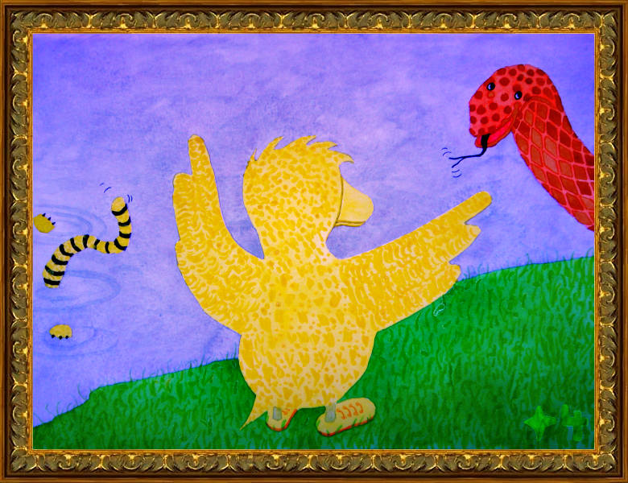
Glühwürmchen
87˚⋀⋁∷∷˚
Kannst du mein Licht sehen? Möchte Glühwürmchen wissen.
ja, natürlich, es strahlt doch so schön, es scheint zu fliessen.
Ja, dann sei ja gut, sie müsse nämlich zur Fahrzeugkontrolle,
dort ihr hätte einer gesagt, was dies’ schwache Leuchten solle.
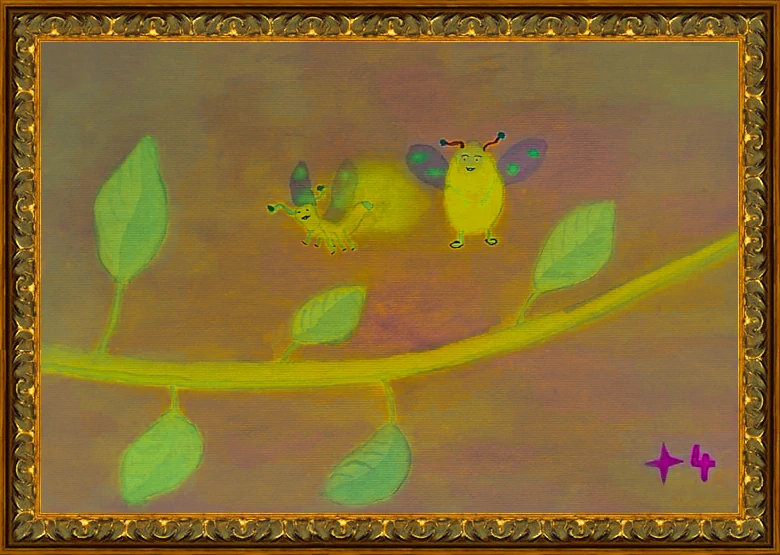
Maikäfer Bruno bisschen verliebt
88˚⋀⋁∷∷˚
Hallo Bruno, was hast du denn dir da für ein Buch anbei?
Nur so, nix spezielles. Komm schon, möchte Auge wissen.
Also gut, die Intelligenz einer Pinipajkirsche im Monat Mai.
Wow, bist am Studieren? Nein.. tue Glühwürmchen missen..
Ach, genau, Würmchen ist ja gestern in die Ferien gefahren.
Ja, so Bruno, aber die gefühlte Zeit liege etwa bei 12 Jahren.
Ei, bist verliebt? Ja, ein bisschen, sei halt in sie reingefahren,
da habe er gesehen, sie tue wie eine Pinipajkirsche strahlen.
Sie jedoch nicht wusste wie Paj schön. Er nun Buch schenke.
Schau mal Auge, genau soo hübsch wie Würmchen, so wach.
Ja wirklich, komisch so dir gleich, noch keiner dies bemerkte.
Sei halt wegen des Rücklichts, sei manchmal schon schwach.
Du Bruno, Glühwürmchen mir auch kürzlich, ein Buch zeigte.
Die verwegensten Flugbremsmanöver, kühner Käfer Heute.
Sie solche mit dir will üben, Parallelflug sie freudig meinte.
Wow, surrte Bruno, als ob bisschen verliebt, so Käferleute.
Selbst Bärenpranken
89˚⋀⋁∷∷˚
Es trägt der Wunsch die Zeit,
gibt Heil auch Form bereit.
Verträgt so niemals Streit,
bloss kluges lang vereint.
Wünsche sind Gedanken,
neue Wege oft so Schranken.
Flinke Mäuse, selbst Bärenpranken,
in gütig’ Zeiten, dir nur wollen danken.
Dropi alles wusste
90˚⋀⋁∷∷˚
Vogeldame Dropi sagt, es ist schön, so dich jemand mag.
Sei dem Herz ein Gefühl, wie ein herrlich schöner Tag.
Pandabär Emil
91˚⋀⋁∷∷˚
Wo Pandabär Emil mit den Eukalyptus blättern gar nicht zufrieden war,
sagte Tierpfleger Horst, den ganzen Tag herumhängen und motzen, ist klar.
Da Emil ihn aufmerksam machte, er solle nicht von sich auf andere schliessen.
Pandas eh faul, erklärt Horst, dies man wisse. Jetzt ihn Panda Emil hat gebissen.
Salto mit Format
92⋀⋁∷∷
Wo Spatz Hupf einst im Wind einen Salto machte.
Der Rabe Dradu, herzhaft und sehr lange lachte.
Zu Hupf gütig krächzte, du bist ja ein richtig’ Akrobat.
Er schon wisse, zwitscherte Hupf, einer mit Format.
Zu Khala gehen
93˚⋀⋁∷∷˚
Puffi, kommst du mit zu Khala?
Au ja, ist sie denn, auch schon da?
Glaub schon, Frosch Bubu hat gesagt,
der Forelle Mimi, frag Khala, ich bin überfragt.
Also gut, komm lass uns einfach mal schauen gehen.
So schwamm Puffi das Seepferdchen im Drehen,
mit Eveline zu Khala, der lustig’ Schildkröte.
Auf dem Weg sahen aber Alberts Kopfröte,
ein Enterich, so schimpfend, ein Aufpasser.
Heute kein Schwimmen! Nicht für Kleintiere!!
Nicht über, unter, oder gar nahe dem Wasser!
Seid verhaftet! Alle!! Zeigt her die euren Papiere!
Und hätte sich nicht da dieser Mensch angefangen,
Albert mit Brot zu füttern, wäre nichts mehr gegangen.
Was bloss los mit dem Federtier, jeder ernsthaft dachte,
Khala aber wusste, zu viel Zeit mit Menschen er verbrachte.
Coca & Ferdinand
94˚⋀⋁∷∷˚
Coca und Ferdinand, zwei Aras,
Papageien von edlem Format,
hatten manch Streit mit Harras,
Schäferhund, mit weniger Grad.
Der Hund oft ihnen sprach, Wau,
zwei Papageien und keiner schlau,
so was sieht ein Hund selten, au au,
und welches von den zwei sei die Frau.
Coca sagt, der Hund sei ein richtiger Flegel,
der komme ihr nur einmal, unter ihre Greifnägel.
Ferdinand aber, schon siebzig Jahre alt, sich wusste,
ein so kurzlebig Tier in seinem Glauben eben leben musste.
Spricht bald zum Hund, Grrr Grrr, macht ein Wuwu wie viele Stund’?
Ah, lass, meint Coca, das Tier ja nicht wisse, wie alt es denn selbst sich ist.
Er nie esse, altes Futter, und schon gar nicht trockene Nüsse, wie manch Papagei,
seit er weg sei von Mutter, so Harras den zwei. Jetzt Coca fragte, wann wird’s eigentlich Mai.
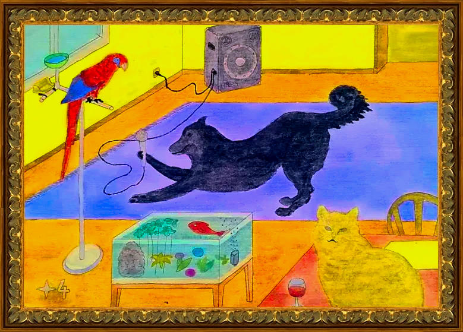
Schlange fast nicht gesehen
95⋀⋁∷∷
Also vergesst nicht, wir sind recht trainierte Frösche und keine Affen,
sollte es trotzdem jemand nicht über diese breite Strasse schaffen,
wird er, falls ansprechbar gleich verwarnt, mit Tarndecken getarnt,
dies ihm aber helfe wenig da Autoräder mehr meist sind stämmig.
Wozu noch eine Tarndecke, will sich Hupfi, wohl ganz spontan wissen.
Wegen Rutschgefahr, kein Frosch mehr springt, wenn andere zerfliessen.
Ei, beim heilig’ Sprung, würden nicht besser warten, hier bleiben im Garten?
Nein, sagt der General, wegen der Schlange da, wir nicht mehr können warten.
Hupfi Großfuss, Fänger
96⋀⋁∷∷
Hupfi Großfuss, Fänger bei den Kroko Flyers,
fühlte sich schon irgendwie eigenartig anders.
Im Training nun, er gar hochsprang in die Lüfte,
so ein Raumschiff ihn wieder runterholen musste.
Schwirr war verwegen
97˚⋀⋁∷∷˚
Schwirr, ein Schwirrkäfer von der Nachbarwiese,
nutzte sich an jenem hübsch’ Tag die gütig’ Brise.
28 Mal um die Erde ist er geflogen, echt ungelogen,
gut, wollte in extreme Höhe steigen, ist nicht verboten,
wäre dazu gut gelandet, punktgenau, anderes man meidet.
Ja, Schwirr war schon einer, richtig gut Käfer obwohl sehr kleiner.
Auf seinem Weg der 12’ten Umrundung, sah er Carlo, welch Fügung,
Der meinte, Ay, Käfer bist Sternfahrer? Sicher so Schwirr, ein verwegener.
Alois Federweiss auf Wohnungssuche
98˚⋀⋁∷∷˚
Also gut zwölf Federn für das ganze Nest,
scheint ja trocken zu sein, nichts wo nässt.
12 Federn? Du bist wohl schlimm von Sinnen!
40 Federn oder 9 Meter Seil von stärksten Spinnen.
Ach, zu teuer, und Sonne geht schon nachmittags unter,
bin kein Bär und mache Winterschlaf, möchte leben munter.
Aber du bist doch Eule, fliegst du eben bisschen zur Sonne hin,
darfst du umsonst, machen wir 35 Federn, ist nicht so schlimm.
Kann einen drehen
99˚⋀⋁∷∷˚
Der Rabe Dradu seinen Jungvögeln nahelegt,
wenn ihr mal dieses Land unter euch nicht sieht,
dann hat es euch wahrscheinlich im Flug gedreht,
halbe Schraube fliegen, und Sicht gleich wieder steht.
Ausflug mit Hupf
100˚⋀⋁∷∷˚
Zuerst waren wir hübsch’ Sonnenblumenkerne speisen,
dann erklärte Hupf, wie man mit dem Wind kann reisen.
Bei gutem Wind gleiten Spatzen wie eine Gewehrkugel,
njuuuuuuum, mein lieber Strudel, wie Pferde ohne Zügel.
Dann war wohl euer Ausflug so richtig spatzenmäßig nett.
Und wie, später flogen wir zum kühlen Bach, war Mega fett.
Da gibt’s eine Stelle, wo der ganze Strand also Bauchtief ist,
und da sei das Wasser ja so gut, da es aus den Steinen fließt.
Heimweg war auch super, mit leichtem Gegenwind ja segelten,
zeitweise auf dem Rücken, zum Spass manche sich wie torkelten.
Ja, war echt gut, wollen wieder gehen, am Bach ja sahen eine Stelle,
wie Höhle, so man da reingehe, sehe man auch Tagsüber Nachthelle.
Knochenhohlraumhund
101˚⋀⋁∷∷˚
Wo Auge mit Fünkchen Tiere entdecken spielte,
der Hund Harras, ihnen aufmerksam zuhörte.
Beim Tiere entdecken tue man Tiere denken,
sie gut erklären, wie bildlich verschenken.
Das Wuschelreh, hat Fünkchen gedacht.
Auge den Digivogel, der im Quadrat lacht.
Fisch Gopi, wusste einen singend’ Seestern.
Katze Ini, erzählte vom Mäuseland, was sei fern.
Wo der Harras auf einmal sagt, Knochenhohlraumhund.
Coca, Hyazinth Dame lacht, wie der Hund ist klug, zu jeder Stund',
und was will er machen, der hohle Raum im Hund, will Coca jetzt wissen.
Der macht Wasserfälle, Bäume, Pulsare, Sonnen, selbst Papageien dort spriessen.
Am klaren Fluss
102˚⋀⋁∷∷˚
Am klaren Fluss der beständig leicht ist fliessend,
sitzt Frosch Bubu, Gedanken ins Wasser giessend.
Er mag solch Kühle, gut ein Sommertag so endet,
leise Bewegung Ihren Tag der Nacht zuwendet.
So liebt er beides, die Drehung wie die Leere,
gut helles Leuchten wie jede dunkle Stelle.
Doch Wasser sei ihm schon am liebsten,
da er ja würde, vor Freude fast bersten.
Käfer Goldi
103⋀⋁∷∷
Wo Käfer Goldi die Steuern zahlen wollte,
mit guter Mistkugel, man ihn fast verhöhnte.
Goldig müsse diese sein, uns nicht etwa klein.
Jetzt Goldi lachte, dies’ Käfer menschlich dachte.
Das Brüllen missverstanden
104˚⋀⋁∷∷˚
Ah, nee, klagt leise, Löwe Kurt, da kommt ja wieder dieser Löwenbändiger,
dürfen sicher wieder durch Reifen springen, ein Spinner ein beständiger!
Ja, weiss Elfriede, Löwin, er hätte sie auch kürzlich dumme Kuh genannt.
Dem werd ich jetzt was brüllen, nun Kurt aufgebracht, bin ja mal gespannt.
Und wo der Knufu näher kam, Kurt ein unglaubliches Groaur hervorbrachte.
Doch Elfriede wusste, Knufu doof, gleich dachte, Kurt ab Freude so machte,
ihm sagte, ja Kurt brave Katze heute Reifenspringen, noch glücklich lachte,
aber dann aufhörte, wo Kurt alle diese Reifen kurz und klein gebissen hatte.
Böser Tiger, sich Knufu schreite. Beschränkter Menschenaffe, Löwe brüllte.
Elfriede wusste, das Training falle aus, so es ja diesen Knufu eher mühte
und zu essen hätten sie an dem Tag auch nichts bekommen, echt böse,
da dieser Knufu persönliches vom Beruflichen schlecht trennen könne.
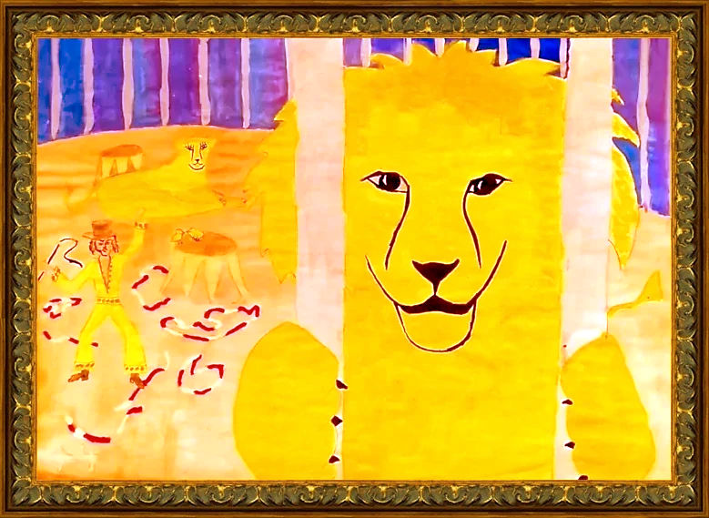
Knufu & Kurt
105⋀⋁∷∷
Knufu der mutige Löwenbändiger erzählt, Löwen sehr gefährlich.
Löwe Kurt aber wiegelt ab, so einen fressen würde keiner, ehrlich.
Gut, mal bisschen beissen, um zu zeigen, was gefährlich darf heissen,
aber als Käfigtier sei man eher gefügig, da Knufu sonst werde traurig.
Duftkarte
106˚⋀⋁∷∷˚
Delphin Mildes Lachen sprang sich gerne einfach in die Luft,
atmete sie ein und wusste noch im tiefen Wasser Ihren Duft.
Eigentlich hätte er jetzt alle Düfte weltweit schon zusammen,
verirre sich nie, schwimme selbst nachts ganz ohne Bangen.
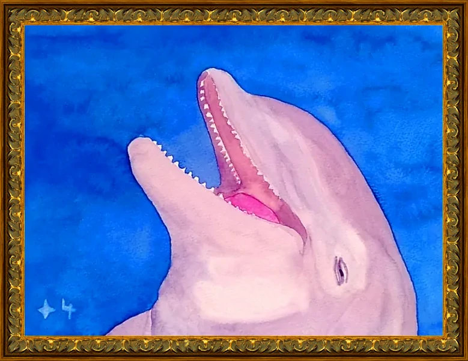
Schlaf & Wach
107˚⋀⋁∷∷˚
Hase Hoppel und Toktok der Specht sich rätselten,
da Igel Bruno ihnen sagte, Schlaf sei das wertvollste,
nicht bloss Winterschlaf, auch der nächtliche tue gelten.
Wegen der Erholung, und es einen ja praktisch nichts koste,
gut, Zeit, aber die so auch des Traumes Kind, also wirklich gütig.
Ja, so Bruno, Schlaf ist ein hohes Gut, man müsse sein auch mutig,
da man nicht wisse, was geschieht, wenn hinein es jeweils einen zieht.
Und im wach sein ja gleich, nur falle da nicht immer alles federleicht.
Klick Klick Klick
108˚⋀⋁∷∷˚
Gestern kam dieser Albert, ein Enterich.
Der Krebs hätte ihm wieder, was geklickt,
und solch’ gehe ihm bald gegen den Strich.
Wohl kein Gruss klick klick klick und genickt,
noch so mit diesen komischen Augen gedreht.
Er ihn sicher auf den Arm nehme, so Albert denkt.
Ah, jetzt hör auf, Krebs dich doch auch nicht versteht,
vielleicht er sich was Nettes denkt, dies sein Klicken lenkt.
Meinst du? Könnte schon sein, Fisch Sami sah, wo er war klein,
wie Krebse jonglieren, mit Steinen, wie ist den dies, kannst meinen.
Solche Krebse tun dies eben. Ja und das Augendrehen? Was er meint?
Weil der Krebst hätte ständig auf seine Badehose gezeigt, ihm scheint.
Ach was, der Krebs macht Yoga, und keiner weiss, wo er hinschaut da.
Meinst du, ja? Sicher? Na dann ist ja gut, der Krebst hätte sonst Mut.
Ja, du bist mir ja einer, wieso trägst du überhaupt diese Badehose?
Wegen Wanderfischen, um Solche ist sicherer, so nichts ist lose.
Dieser Albert
109˚⋀⋁∷∷˚
Als Enterich Albert sah, wie der Krebs Geburtstag feiern wollte,
offensichtlich mit seinen Freunden, Schalentiere, er stark grollte.
Dieser Krebs ihm jetzt wirklich nicht scheint sehr Bach-verträglich,
er habe ja nicht mal Federn, und sein Tanzen, einfach unerträglich.
Hätten sich an den Scheren gehalten, mit diesen Augen gekullert,
so einer, der Große, habe wahrscheinlich ins Wasser gepullert!!!
Ach, Albert, Geburtstag ist doch einmal im Jahr, nicht alle Tage,
und wenn die sich halt mal sehen, wollt’ ich da schildern vage..
Nichts da, so Albert, keine Wasserfall aufenthalts genehmigung!
Auch nicht an Geburtstagen, nur so, müsse sein, die Regelung,
und es komme ja dazu, sie sich unter Wasser, wie verstecken,
jedem Klug bald schiene, womöglich sie dort etwas verdecken.
Jetzt hör aber auf Albert, Krebse doch stets im Wasser leben.
Und wie will wer was verstecken der sich tut federlos geben?
Vielleicht in den Scheren, oder gar womöglich im Schwanz?
Genau, spricht Albert, gefährlich der Krebs, muss weg, ganz!
Jetzt kommt der Krebs, Klick klack hallo ihr zwei, alles frei?
Hallo Krebs, wie geht’s? Hatte Geburtstag, der letzte Schrei,
Krebsionentanz, Scherenwiegen mit Augenrollen, yep yimmi,
und Bewilligung hätte er auch eingeholt, bei der Forelle Mimi.
Da schau, so Albert, der geht gar ins falsche Ratshaus, ein Graus.
Wie Falsch? Wir sind ja unter Wasser geblieben, in Mimi’s Wasserhaus.
Na dann sei es noch mal gut, brauche sich aber nicht zu freuen, verfrüht.
Dies mit Mimi’s Wasserhaus kenne er nicht, und wehe Krebs, falls nur Gerücht.
Jägergespräch
110˚⋀⋁∷∷˚
Dieser Hirsch Doipo weisst du, so der eine Jäger, sei schon gerissen..
Einmal als er sich umdrehte, sah ihn, wie er nach seinem Fernglas schnappte.
Wisse auch nicht wie der so anschleichen könne, hätte ihm fast das Herz zerrissen.
Dann nach 4-stündiger Pirsch, die Vesperbrote gestohlen.., bei dem Tarnung halt gut klappe.
Also eigentlich sei so, wenn man ihn sieht, könne man sicher sein, gleich einem böses geschieht.
Dem Gämsepeter habe er den halben Bart weggebissen, & seine Schuhe, er konnte auch gleich vermissen.
Dieses Huftier sei extrem schnell, und der Gämsepeter ja schwor, kleine Leuchtdioden an ihm leuchteten grell..
Aber so er mit seiner Familie, sonntags, unbewaffnet spazieren gehe, er diesen Doipo am Wegrand stehen sehe.
Flussmusik
111˚⋀⋁∷∷˚
Bernd das Krokodil,
erzählte immer viel,
es sich wie empfiehl,
sein allerbestes Spiel.
Dies sei das Do Re Mi,
meinte auch Fisch Sami,
weil egal wie groß einer ist,
mit Do Re Mi, nie Zeit war trist.
Solch’ Singen sei eine feine Sache,
sagt Paul die Ente, dies glücklich mache.
Aber auch einfach Summen, nun Carlo der Aal,
bei einer jeder Arbeit, er bedenkenlos stets empfahl.
Eigentlich klingen wir ständig alle, hier in diesem schönen Fluss,
aber wir können auch leisere Spiele, wenn es wem so zärtlicher muss.
Und wie zum Beweis verharrten sie in Ruhe, ich hörte sogar weit entfernte Kühe.
Doch nicht lange, weil jetzt spricht Grille Zirrzurium, also Kinder, sei’s uns wieder drum.
Julius der Bär
112˚⋀⋁∷∷˚
Julius, so nannte sich einmal ein Bär,
der war riesig & auch ziemlich schwer.
So, wenn er abends sich zur Ruhe legte,
da sich schlafend ja nicht stark bewegte,
kamen viele kleine Bären, schnell daher,
so manchmal zehn, und manchmal mehr,
stiegen auf den schlafend Julius nun rauf,
spielten, tobten, und massierten ihn so auch.
Doch der Bär von all dem gar nichts wusste,
jedoch sich täglich so müde schlafen musste,
träumte hübsch von Bären, und das sehr vielen,
die durch den Tag mit ihm würden wollen spielen.
So glaubte Julius, wo er morgens wurde munter,
sein Leben, durch diese Träume, wirklich bunter,
merkte aber so er wach war bis zum Abend nicht,
dass sein Traum längst Wirklichkeit geworden ist.
So wenn auch du ein Bär oder höher Tier gar bist,
bedenke ruhig, mit all deiner feinsten klügsten List,
wenn du wie ich ein lebend träumend Kind dir bist,
wir alle träumen, nur sprechen, tun es manche nicht.
Krista
113˚⋀⋁∷∷˚
Der Delphin Mildes Lachen,
konnte so viele gute Sachen,
auch die Krista einmal heilen,
solch beschreiben diese Zeilen.
Krista war ein wenig eingeschränkt,
die Knochen, sich hatten leicht verrenkt.
Da sie beim Schwimmen, ihn bekam so lieb,
ein Plan der Freude, bald in Ihrem Körper blieb.
Und nicht nur dies, Krista’s Elektronen, neu bewohnen,
alte, längst von ihr einst vergessen, aber nun wichtig Zonen.
Sie Mildes Lachen liebe, und am liebsten, sie für immer bliebe.
Da sie dies nicht konnte, sie sich strengte, und so bald gehen wollte.
Träume lenken
114˚⋀⋁∷∷˚
Wieso ein menschlich’ Traum will lenken,
bloß weil doch was wir träumen denken,
und ebendieses Denken, nur wir fühlen,
solch’ gefühlte, darf das Handeln mühen.
Gut Zeugnis
115˚⋀⋁∷∷˚
Nichts mir hat je mehr gefallen,
wie Menschen die in Liebe waren.
Heute nährt ihr Lachen meine Hallen,
Zeugnis legt dem ungezwungen Klaren.
Glück & Freude
116˚⋀⋁∷∷˚
Glück und Freude sind wie wilde Pferde,
brechen aus, nicht zu halten diese Herde.
Wozu aber auch so was fangen wollen?
In einem lebend’ Herz, sie rennen sollen.
Seele feine
117˚⋀⋁∷∷˚
Geh nach oben Seele feine,
lass nicht Träume sinken deine.
Vertraue doch diesem golden Mut,
ist doch dein Hafen, kann dir nur gut.
Ein Sternschiff hübsch in dir verborgen,
was schlechte Laune kann entsorgen.
Brauchst so bloss Gedanken denken,
die wir grundlos möchten schenken.
Das heute ist die gestrig’ Hoffnung,
morgen erst die heutig’ Schöpfung.
Im Sein erfährst du die Empfindung,
wie gütig’ Geist verlangt die Bindung.
Eingeatmet
118˚⋀⋁∷∷˚
Eingeatmet jede Frage,
geschaut lieb lange dann.
Was beständig, was nur vage,
ihr jede Antwort schenken kann.
Was
119˚⋀⋁∷∷˚
Was wohl wertvoll einem Leben,
so es wüsste, es bloß einmal lebt.
Und dieses eigentliche Geben,
nie wird sein, im Sein verebbt.
Oma nie zufrieden
120⋀⋁∷∷
Und ist dies auch was Ernstes, will Oma Lina wissen.
Aber ja, beruhigt Bär, hätte sie schon richtig gebissen,
und wenn Fünkchen so einen an ihrer Seite dulden will,
werde es ihr nie zu viel, war doch stets auch unser Ziel.
Ja schon, murmelt Oma, aber wenn es ihr fast zu wenig ist?
Dann kaufen wir eben einen neuen, so Bär, er hätte da eine List.
Fünkchen aber diesen Hamster sich doch wohl liebe, sei auch putzig.
Mehr nichtsnutzig, weiss Oma, mit dem Kind gehe doch was nicht richtig.
Immer so schwarzmalen, ärgert Bär, sei eben noch jung, ja täglich lerne mehr,
und diese Frage, was sie denn von einem Hamster lernen sollte, fände Bär nicht fair.
z. B. konnte sie richtig gut schauen, wie das kleine Tier ja klug mit Vorräten umgehen will,
oder wie es bei grösseren Nüssen einfach halte still.. Ach, Bär sei ruhig, wird mir noch zu viel.
Liebe zählt mehr
121˚⋀⋁∷∷˚
Liebe zählt mehr wie weise Worte,
falls du hast von der ersten Sorte.
So Biene, klügste Larve, eine zarte,
ohne beides, 2. Verpuppung, sei harte.
Wasser plätschert
122˚⋀⋁∷∷˚
Liebe lässt uns glaubhaft scheinen,
nichts zu klagen selbst im Weinen.
Die Kinder wollen gleiches finden,
ihnen gefällt so zwei sich binden.
Selber denken
123˚⋀⋁∷∷˚
Ein Leben lang, wir wollen spielen,
in der Freizeit in Berufen guten vielen.
Ist dein Spiel dir längst kein Spass mehr,
vergibst du viel, tust auch Kindern schwer.
Aus dem müssen, kann dir ein wollen werden,
wo kein, freies wollen, wird dir das zarte sterben.
Doch gar schleichend, Betroffene es kaum merken,
so sich ihr Umfeld ständig anpasst, da sie es denken.
Du mir so lieb du Mein
124˚⋀⋁∷∷˚
Wo einst Igeline Trudi noch ein Kind wollte, lud sie die ganze Familie ein.
So jeder diese Zeugung schauen sollte, solch eine Segnung sei nämlich fein.
Schliesslich wisse ja jeder, bloss im Team könne man überhaupt vernünftig sein.
Habe sich geschmückt mit einer Feder, und Bruno ihr sagte, du mir so lieb du Mein.
Hatte keine Kennung
125˚⋀⋁∷∷˚
Wir haben ihn also dreimal verwarnt.
Sicher? Fragt der Kapitän und staunt.
So warum ist er plötzlich verflossen?
Wegen Dudi, habe ihn angeschossen.
Angeschossene verfliessen aber nicht,
nun der Kapitän gar bedrohlich spricht.
Jetzt Dudi sagt, er hätte nicht verstanden,
im Gesicht war dieses Grinsen noch vorhanden,
musste dreimal nachschiessen, erst da hätte es nachgelassen.
Er hätte aber jedes Mal nachgefragt, man sich auf ihn könne verlassen.
Verdammt, Dudi, schimpft der Kapitän, der Mann hatte eine Gesichtslähmung.
Hätte er auch gedacht, sagt Dudi, sah am Arm aber beim besten Willen keine Kennung.
Trudi stets entschlossen
126˚⋀⋁∷∷˚
Wo Trudi im Laden schimpfte, das Datum sei ja längst abgelaufen,
ein viel Frech traute sprechen, ist halt wie Sie, solle es nur kaufen.
Jetzt beschloss Trudi ihn mit dem gefrorenen Fisch niederzustrecken.
Au Backe, tat dies weh, er gar nun ihre Jugend, gleich konnte entdecken.
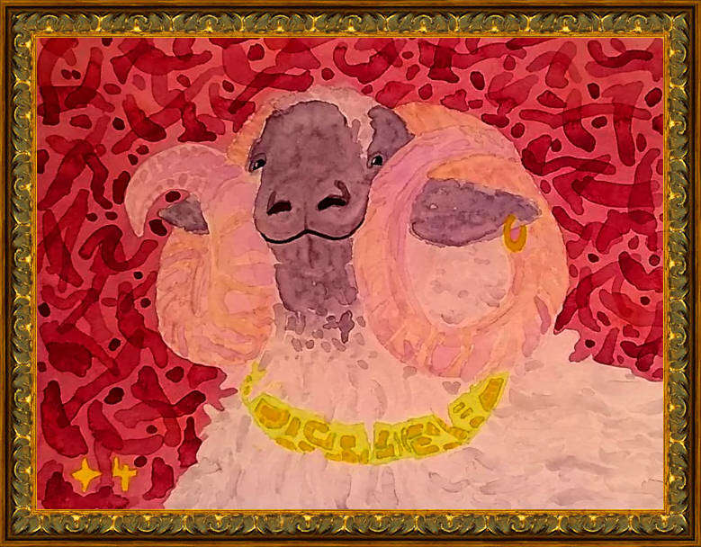
Urschrei
127⋀⋁∷∷
Als einst Opa Bär seine Nerven am Rücken klemmte,
so ja verharrte, als ob er sich, durchsichtiges stemmte,
sprach sapperlot, mein Pferd steht still, aus dem Galopp.
Hexenschuss so Oma wusste, tue ihm gut ein kleiner Stopp.
Und wie lange er da stoppen solle, fragt Bär, ist sicher verboten,
müsse in ein Lazarett, zu Oma fleht, fühle sich wie angeschossen!
Jetzt Oma zu Bernhardiner Fofo sagt, geh’ schauen, ob Bär ist betagt,
und wo der Fofo, freudig auf Bär sprang, Opa eine Art Urschrei gelang.
Neulich beim Boccia
128⋀⋁∷∷
Wo Opa Bär seinen Kumpel Frodo traf,
dieser meinte, Hexenschuss welch Straf,
ausgerechnet heute, wo wir Boccia spielen.
Gehe schon meint Bär, er werde schielend zielen.
Ei, nun Frodo wundert, tut das nicht auch schrecklich weh?
Da Bär, nicht so schlimm wie wenn ein Bernhardiner auf einem steh’,
das Boccia den Rücken sicher besser kuriere wie Oma und ihre Vampire.
Da zwackte es Bär erneut, und Oma rief los, bei solch’ Tempi Boccia keinen freut.
Elke sagt
129˚⋀⋁∷∷˚
Elke sagt, sie hätte schon alles gesehen.
Manfred drängt, dies sei kein Vergehen.
Elke dabei dachte, ach, wahr nicht schön,
so der Knabe, den Tod nicht will versteh’n.
Glaubst du wirklich
130˚⋀⋁∷∷˚
Glaubst du wirklich, wenn du schläfst, in Nächten,
nur Zeit vergeht, die du kennst aus den Berichten.
Gut Mut
131˚⋀⋁∷∷˚
Gut ist so, weil froh tut gut.
Mut tut gut, so froh lässt Mut.
Nur froh, will nicht jedem gut.
Nur gut Mut, es auch nicht tut.
Sind aber auch hübsch
132⋀⋁∷∷
Maikäfer Bartholomäus klagt, seine Frau würde sich immer so an die Brüste fassen,
nach oben drücken, während sie frage, sind sie hübsch? Sie könne es nicht lassen.
Und solch sie auch mache im Laden, beim Bäcker, sei ihm manchmal schon schwer.
Dann er präzise prüfen müsse, bestätigen alles O.K., erst so sie wieder strahle sehr.
Teilungsform
133˚⋀⋁∷∷˚
Als Idee der Ahnung kühn entsprungen,
sich teilend Zellen wie dem ich gelungen,
des Menschen erfolgreichste Teilungsform,
Entscheidungsfreiheit in seiner Lebensnorm.
Zwinkerte & meinte
134˚⋀⋁∷∷˚
Ein Gott von unvorstellbar’ Kraft,
zog einst quer durch meine Nacht.
Nahm alles mit und liess die Träume,
zwinkerte & meinte, schöne Schäume.
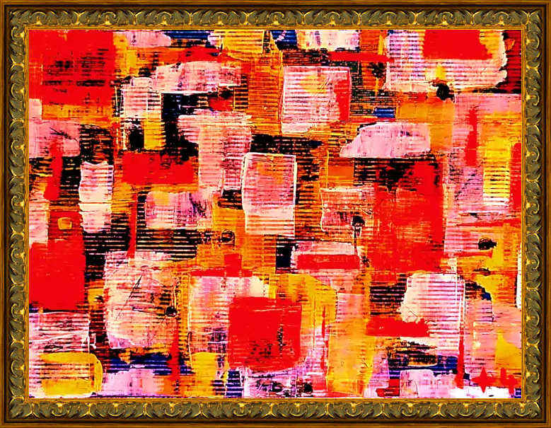
Pendlermann
135⋀⋁∷∷
Hier dreht es schaurig links, der Pendler es jetzt wisse,
und ich wundernd Kind, wollte sehen, wie er sich messe.
Nur der Kugel will er trauen, ich soll aufs Kreisen schauen,
und wie als Beweis, ruft er, schau’, dreht doch links im Kreis.
Du bist mir ja einer, hab ich diesem Pendler lieb gesprochen,
von oben geschaut, aber von unten, ist Dein Gesetz gebrochen.
Und er solle auch bedenken, wenn man von der Seite gar schaut,
die gleiche Kugel dann auf einmal seltsam linear hin & her sich traut.
Ich wohl ein ganz Schlauer..! Nein, so ich, gewöhnlicher Sternschiffbauer,
doch mit allem gut verbunden, so auch mit fremden Sichten, unumwunden.
Nun der Pendler wisse, um was es sich da handelt, je nach Sicht, es wandelt!
Ja, so ist’s, Du Pendlermann, besser weise, hier ist ein Feld, was beides kann.
Dudus Mann
136⋀⋁∷∷
Mein Mann ist Bester im Schützenverein,
meint Heidi, spiele auch Fussball ganz fein.
Meiner, sagt Regula, kann Armbrustschiessen,
und von seinen Geschäften tue viel Zins fliessen.
Ihrer sei Arzt, weiss Monika, nur sei er gar selten da,
und so dieses Operieren erkläre er wie ein Instruieren.
Da hätte es die Dudu bald besser, ihr Mann sei ein krasser,
der nie wisse, was er müsse, bleibt stets zu Hause, gibt Küsse.
Ja, ist ein schlimmer, weiss Gott was die ständig treiben im Zimmer,
und wenn man ihn mal sieht, sein Blick gleich in den Ausschnitt zieht.
Schrecklich der Mann, als ob er sich zu Hause nicht genug kriegen kann,
Dudu aber sagt, sei ein sehr lieber, er sie gut nehme koche und singe Lieder.
Eihe weihe
137˚⋀⋁∷∷˚
Eihe weihe, mich der Laie,
stürmisch’ Herrscher, kleine Haie.
Bunte Fische, große Meere,
jedem lebend’ eine Seele.
Blaue Welten, reine Stellen,
kausale Grüsse, dich erhellen.
Pipi po, und Papa da,
Mutterglück wünscht dir ja.
Sat ti retsi, bumi poh,
steile Treppen, brennend Stroh.
Blumenmeer im alten Greis,
selten blüht, bevor’s vereist.
Wissend Kinder, ewig Licht,
Zweifler eben, dieses bricht.
Suchend Opfer nie am Ziel,
Unverstand verlangt zu viel.
Selbstlos’ Lachen, länger glüht,
Ada Eda zeitvoll, nicht bemüht.
In reinem Herz dich kühn belebt,
entspannte Körper sie nur regt.
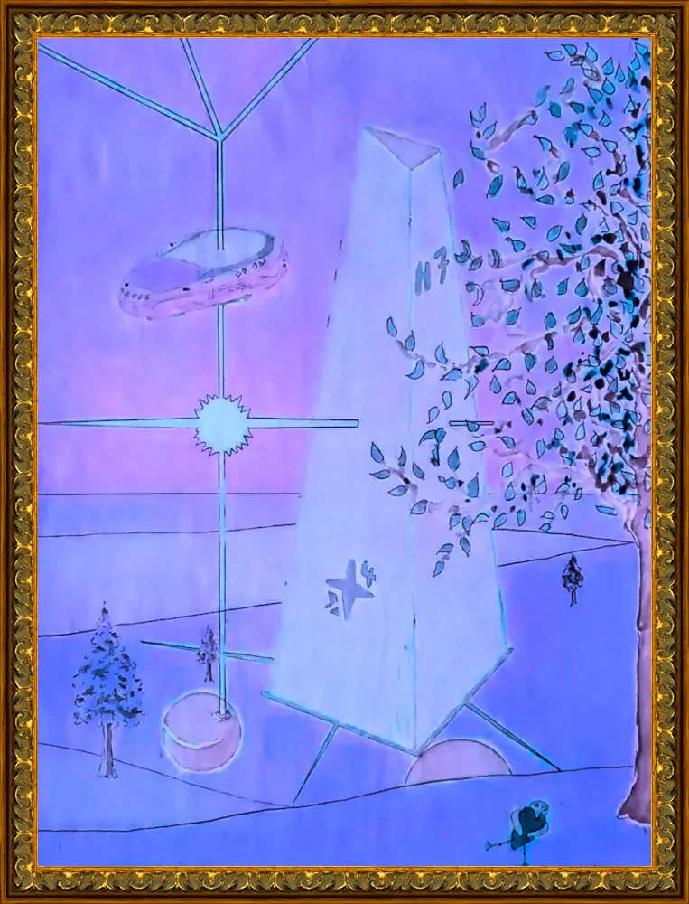
Gloria
138˚⋀⋁∷∷˚
Gloria, ein freundlich’ Geist aus alten Tagen,
erklärte gütig, was das Leben vorne sieht,
wird zur Wahrheit nach hinten getragen,
so lebend’ Geist, immer in die Mitte zieht.
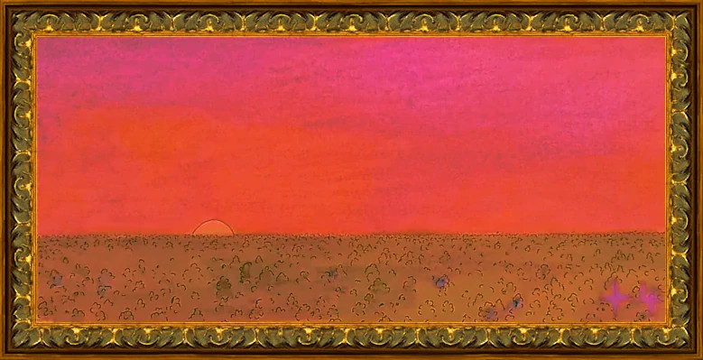
Lulu wollte Sommer bringen
139⋀⋁∷∷
Wo mal die hübsche Lulu, eine Schwalbe, sich niederlassen wollte,
riefen alle gleich, eine Schwalbe mache noch keinen Sommer..!
Und wo sie sich nachfragte, ob sie solch’ ernst nehmen sollte,
alle bejahten.. Da zog Lulu weiter, samt Sommer, ein Jammer..
In einer Welt wo Blumen blüh’n
140˚⋀⋁∷∷˚
In einer Welt, wo Blumen blühen,
wo Leben darf entfaltbar sein,
Kontrolle darf im Guten ruhen,
da vorgelebtes zählt allein.
Kontrolle als Entdeckung,
in Freude stets sehr schön,
dies gleiche als Verdeckung,
das Leben lässt in Starre steh’n.
Frodel war sprachlos
141⋀⋁∷∷
Wo der Fahrlehrer mittels beherztem Eingreifen allerschlimmstes verhindern konnte,
war Elfriede empört, es noch lange hätte gereicht, sie doch eben ausweichen wollte!
Fahrlehrer Frodel war wohl ein Seher, sagte, ohne ihn, sie fabriziert hätte einen Dreher.
So eine Frechheit, lacht nun Elfi, ob er sich eigentlich fühle, als groß’ Orakel von Delphi?
Traummurmeln
142˚⋀⋁∷∷˚
Ein Frecher, genannt Tiger, zu Auge sprach, los Käfer, Fühler hoch!
Dieser meinte, kenne ich, Knie anwinkeln auch, mehr sogar noch..
Mache nämlich Käferyoga, kann auch Tiere wie Hase oder Kobra,
Gib schon her dein Geld du mir viel zu viel redend’ Stellungsheld.
Aber Yogis haben niemals Geld, hast du denn nie fern geschaut?
Und der Beutel, was ist da wohl sonst drin, klug Tiger keinem traut.
Ach Traummurmeln, habe ich von Fufu, kannst sie in alles wandeln.
Nun dieser Tiger möchte wissen, wovon genau so alles will handeln.
Hatte beide Träume
143˚⋀⋁∷∷˚
Es mal traf ein Voll von Träumen,
einen, der seine wollte versäumen.
Ei mei.., wem zu liebe dir so bliebe,
wollt so ersterer wissen, gut in Liebe.
Chruup hroll, Upana toipiii, Chrapo aj ai.
Ach, so schön, und wirklich alles im Mai?
Aisa hejo heoj, mnja mnju mnji, oilmi je.
Verstehe, keiner ist traumlos, ich sehe.
Gegenwart
144˚⋀⋁∷∷˚
Was wohl könnt’ der Mensch in einem Atemzug sich denken?
Was solch’ gedachte, dem nächsten Atmen würde schenken?
Wie viele Bilder mögen in solch’ Sekunde eines Lebens passen?
Auch wie darf Denken, denk los, gleiches gut als Wissen fassen?
Darf also Wissen uns den Rat, den der eignen Zeiteinheiten geben?
Oder könnte auch das Denken herrschen, ist es dem Wissen eben?
Wie sekündlich strömt, aus Zukunft im gleichen Takt Vergangenheit?
Warum Leben ahnt, beide ständig fliessen, nur in eigen’ Gegenwart?
Kugelblitz macht Muuuh
145˚⋀⋁∷∷˚
Was hat dich denn für ein Blitz gestreift?
Ein Kugelding, man es fast nicht begreift,
war etwa groß, wie ein stattlicher Fussball,
aber schwebend, so nicht kommend zu Fall.
Ei, so gefährlich, & wollte dich echt streifen?
Ja wahrscheinlich, wie ein wilder Gummireifen!
Haben sie denn auch richtige Namen, wie Elfen?
Konnte nicht fragen, wollte mich ja nicht versteifen.
Frosch Bubu sagt, hätte schon verschiedene gesehen.
Manche ihm erleuchtend brummten, er wollte verstehen,
Bruuuuuuuuuuu Mruuuuuuuuuu Bruuuuuuuu Uuuuuuuuuuu,
Etwa gar, so wie eine freudig’ Kuh, sich singen würde Muuuh.
Hallo Mensch
146⋀⋁∷∷
Hallo Mensch, du mächtig Ding,
was du schaust, ist in dir drin.
Was misst, wir erstellen neu,
so träume gut, & richtig freu’.
Die Katze Ini
147⋀⋁∷∷
Die Katze Ini, lacht zusammen mit dem König über Enes, der Flötist,
so, weil doch Enes um sich alles, wenn er spielt, schon mal vergisst.
So hat er mal sich bei der Kunigunde, grenzenlos da weit vermessen,
als er Flöte spielte, und sich dachte, die Gunde würde ihn vergessen.
Karl Sturzmann
148⋀⋁∷∷
Kranführer Karl Sturzmann war gefürchtet,
seine Abbruchkugel, wahr einschüchtert.
Ach was, meint Karl, kann sehr zärtlich,
Kugel lieb, Menschen sind verletzlich.
Beim heilig’ Kran, wie der nun dachte,
Sturzmann und seine Kugel, jeder lachte.
Also, solange er bei ihnen nicht war zugange,
auf seinen Baustellen herrschte Angst und Bange.
Kugel zähmen
149⋀⋁∷∷
Als diesen Bauarbeiter Bachmann die Abbruchkugel traf,
war Kranführer Karl entsetzt, schon der vierte, welch’ Straf’.
Wozu überhaupt solche sich da rennen, er noch wollte grämen,
ist wohl eine Art Training, versuchen sich, die Kugel zähmen.
Wieso das Nichts teile
150˚⋀⋁∷∷˚
Wo Opa Bär einst hörte, es gäbe einen richtigen Wettbewerb,
im Denken, er sich sehnte die Siegesurkunde Oma schenken.
Doch keiner an seinen Sieg glaubte, nicht mal Nupie die Raupe.
Bär aber alle überraschte, nach gut 7 Turniertagen Ersten machte.
Nun es Oma Lina schon hat wenig gewundert, wie Kluge dort messen.
Extrem schnell, so Opa Bär, vor jeder Frage müsse man Antwort wissen.
Ei, wundert Lina, und welches war die schwerste Frage all dieser Spieltage?
Wieso das Nichts teile, nun Bär, weil Lina sonst nachfrage, war nicht schwer.
Geschenke
151˚⋀⋁∷∷˚
Geschenke sind doch nie gleich dem Verlangten,
auch, wenn du mimst ein starkes Anrecht darauf.
Geschenke doch bloß unabhängig, Freude walten.
Nur wache Seelen, wollen versteh’n diesen Verlauf.
Merlin & Kumpi
152⋀⋁∷∷
Niemals der Kumpi Blaustein stand einfach still,
so Merlin dachte, wo dieser herhat diesen Drill.
Kumpi sich so wusste, in Bewegung sein musste.
Aber geistig, lacht Merlin, sonst gibt’s keine Büste.
Liebst Geschenke
153˚⋀⋁∷∷˚
So schön wie deine Blüte ist, du mir Liebste meiner Sinne,
so zart dein ganzer Garten misst, dem ich nicht entrinne.
Es späht aus dir als Nektar tropft, mich freudig will erinnern,
Blumen liebst’ Geschenke sind, die Männer glücklich stimmen.
Wuwu & Miau
154˚⋀⋁∷∷˚
Ein lieb Wuwu traf mal eine Katze,
begrüsste sie mit seiner Tatze.
Das Miau sich freudig legte,
so Wuwu schnurrend pflegte.
Miau, miau, wu, Wuwu Miaau,
bist ein Schurke, ziemlich schlau.
Gar gesund, mich dünkt dein Reigen,
schön, dürfen Katzen ihre Pflege zeigen.
Fliegend Brocken
155˚⋀⋁∷∷˚
Weil Liebe fliegt wie ein sehr stabiler Brocken,
sind liebende, gar solche hier, unerschrocken.
Mein Herz, dem deinen tief erregt es schlägt,
nicht immer nur der Stirn, lieb Küsschen trägt.
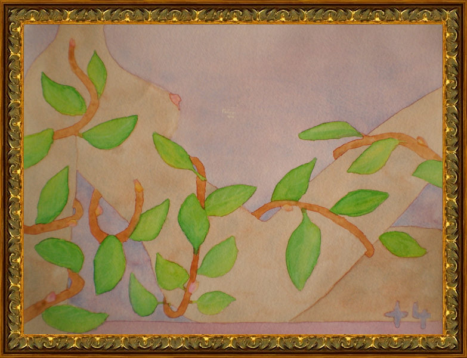
Muttertag
156˚⋀⋁∷∷˚
Ein herzlich’ Dank, du treues Glück,
du Mutterherz, du Mut, am Stück.
So mein Kuss dem deinen Tag,
am liebsten doch in jeder Lag.
Du Muttertier, so Liebe feine,
küssen wollen dich, in deine.
Heute überall, selbst die Beine,
ungeniert, dir süsse Nässe weine.
Männer Tränen lieben, sie gern fangen,
mit ihnen meist benetzen, stark Verlangen.
Zart der Kuss, wo uns einst lehrte deine Güte,
Danke für das Leben, und verbleibe uns in Blüte.
Schnecke Schljubi
157˚⋀⋁∷∷˚
Na Schnecke, wozu hast du denn diese Wolldecke?
Nun, der Winter kommt, und ich will ja nicht frieren.
Hinzu komme, unter dieser ich mich gerne strecke,
man will ja nicht immer, nur im Häuschen brillieren.
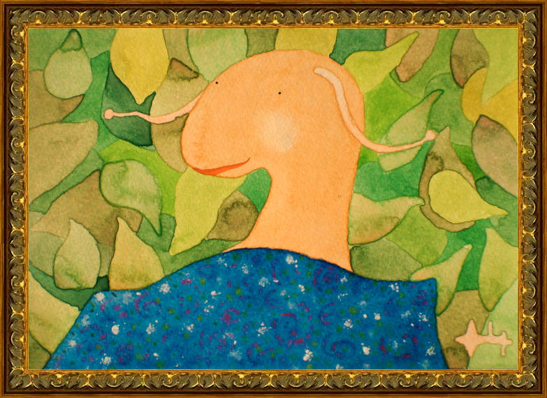
Hummbel & Auge
158⋀⋁∷∷
Hummbel sagte, seine Frau mehr brummte wie lachte,
als er mit ihr, diese eine hübsche Sache machte.
Maikäfer Auge wusste, sei wegen Ihrer Größe,
seine mehr surre, weil habe feinere Füsse.
Er doch sicher ihr Brummen möge,
es ja einen in heiter, Bann zöge.
Ja schon, er jetzt neu mache,
so sie brumme und lache.
Wahre Liebe
159˚⋀⋁∷∷˚
Opa Bär fand raus, seine Liebe mit Lina sei Käfer-gleich,
sie ihn morgens wecke, streichle seinen Fühler Bereich.
Und so Bär ist wach, mit seinen Flügeln er ihr schwirrt,
so wahr beide täglich, aufs neue seien zärtlich berührt.
Frühling
160⋀⋁∷∷
Die Wärme lässt den neuen Frühling,
drängt beständig aus jedem Stamm.
Ganz hübsche Blüten fliessen herrlich,
zu Auge, Nase, ja sogar zur Seele kann.
Eleonora
161˚⋀⋁∷∷˚
Eine Schnecke, stark, hübsch, die Eleonora,
geschmeidig jeweils, kroch durch die Flora.
Nicht, weil sie etwa nicht schneller konnte,
in Freude war sie, und da raus nicht wollte.
So bewegte sich die Schnecke sehr elegant,
weil sie kühn mal selbst, in Liebe hat erkannt,
dass sie am Morgen, selbst im feuchten Tau,
so sie langsam gleitet, nicht weniger ist Frau.
Baden mit Ulla
162˚⋀⋁∷∷˚
Also wo Gundula mit Manuel baden ging,
sich die Hose an Ihrer Hand verfing,
und eher sich Manuel versah,
ganz nackt er war da.
Gunde hatte einen Plan,
den Manuel ihr ausführen kann.
Vom Plan er bald 6 Monate später erfuhr,
den Namen durfte er mitwählen, sie sei nicht stur,
schliesslich dürfe ein Mann schon ab und an wie mitbestimmen,
seien ja, auch Menschen, man müsse nur schauen so sie nicht spinnen.
Ja, die Gundi war schon eine, auch der neue Manuel, war echt süss der Kleine.
Nur dieser der baden ging noch dachte, er hätte Ulla überreden müssen, sie lachte.
Blütenblätter
˚
163˚⋀⋁∷∷˚
Glaubst du an das Gute,
oder lebst du gar danach?
Möchte wissen Fräulein Ute,
weil ihr liege, hier was brach.
Welch’ Anspruch, sie denn habe,
und ob es gut ihr danach sei?
Ob ich denke, es ist schade,
lacht sie da, macht sich frei.
Später wir im Garten sassen,
entzückt der Milde eines Mai.
Der Sturm vorbei, nachgelassen,
als zwei Blütenblätter, dachten frei.
Unermesslich vergesslich
164˚⋀⋁∷∷˚
Ah, diese Fufu, klagt Zirpe Vera,
immer sie soooo glücklich tue da.
Sei alles wegen, diesem Bruno, Käfer,
ein fürchterlicher, dazu noch Schnarcher,
mache chrrrr, chro, chru, habe Mimi gehört,
aber Fufu dies ja fände, halt charmant, unerhört.
Fufu ihn bloss möge, weil er sei extrem vergesslich,
beim Aufwachen sein Unwissen gehe ins unermesslich.
Dann er sie fühlen müsse, und dies überall, also auch Füsse,
erst dann dämmert’s ihm langsam wieder, willst denken, echt bieder.
Und so sie morgens vor ihm auf sei, er also manchmal allein wach werde,
falle er in eine Art Trance, so wie ihm was stürbe, kannst denken, gütige Erde!
Hinterlass
165˚⋀⋁∷∷˚
Wer sich schämen kann für andere,
will schimpfen dann bald gleichen.
Doch weht Scham, stets lieb eigene,
so Spuren hinterlässt, die sie eichen.
Karl Gustav
166˚⋀⋁∷∷˚
Wo einst Karl Gustav in dieser Strassenkontrolle erzählte,
alle Panzerfäuste gehörten seiner Frau, sicher sich wähnte.
Gleich man wissen wollte was denn Femme fatale sei von Beruf.
Jetzt Karl Gustav herzhaft lachte, Gerechtigkeit wie Gott sie schuf.
Freudig Kinder
167⋀⋁∷∷
Menschen können in die Welt, oftmals grimmig schauen,
tun mit ihren Blicken, grausig Welten, sich in Stärke bauen.
Wollen uns, die freudig’ Kinder, wohl sich nur mal schrecken,
so, sie uns in Bälde nimmer sehen, da wir uns verstecken.
Heiß macht müde
168˚⋀⋁∷∷˚
Wo Opa Bär, im Sternen krieg, einst angeschossen wurde,
sagte er, hoppla, eine Kugel nur für mich, welch Würde.
Wie heiss nun eine ist, und wie rasch sie macht müde,
wisse dieser erst der schiesst, so ihn trifft, die Bürde.
Darf
169˚⋀⋁∷∷˚
Gestern war ich mich stark strengen,
merkte gleich, wie lustig dies den Mengen.
Heute einer fragte, weshalb sie nun so denken?
Ach, ich sagte, fremdes Requiem, darf lustig lenken.
Keine Mode
170⋀⋁∷∷
Wie läufst du uns denn rum, ist dies ein neuer Trend?
Ach was, bin Invalide, Armut man so etwas nennt.
Ah so, dachte schon sei neue Frühlingsmode,
schade, hätte auch so was in der Kommode.
Kinder rennen
171˚⋀⋁∷∷˚
Kinder rennen hie und da ganz selbstlos schnell ins Licht,
brechen sich die Träume oftmals auch so selbstlos dicht.
Werden dann zu hübschen Wesen deren Charme besticht,
doch zeigen sie’s nicht jedem, dessen Ton sie mögen nicht.
Freiwillig ergeben
172˚⋀⋁∷∷˚
Los komm raus, sagt Duni, ich sehe dich, verstecken sei sinnlos, er könne durch Wände schauen.
Glaub ich nicht, nun der Gangsta, wenn er so was könnte, würde er nicht in so einem Beruf verharren.
Auch präzise durch Wände schiessen, doppelt Duni nach, das Leben mit deinesgleichen ist mir eine Straf’.
Also gut ich komme, surrt Käfer Sapi, und schwirrt herbei, wollte jedoch betonen, wie er sich ergab, ganz frei.
Scherben im Licht
173˚⋀⋁∷∷˚
Weil ich bin, ein träumend’ Mann, wird ich als solcher wollen sterben,
ich werd vergehen, und weilen dann, zwischen den Worten, leblos Scherben.
Doch Scherben können schön auch sein, falls dich trifft ein Strahl aus Licht,
dann halte sie dir einmal rein, und du wirst seh’n, wie schön dies ist.
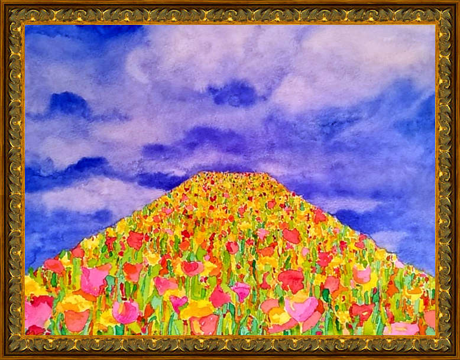
Igel Bruno & das Motorrad
174⋀⋁∷∷
Wo der Igel Bruno ein Motorrad wollte,
alle lachten, und fast jeder übel prollte.
Er falsch gesprochen, sprechen sollte,
damals, als mich dies Motorrad holte.
Funken springen
175˚⋀⋁∷∷˚
So wie schlimmes Wimmern Schimpfe strahlt,
die Grenzen des geträumten ich’s gut verwahrt.
Rasch ist dort ein zarter Wille streng gemeuchelt,
weggesperrt in des namens dieses Gut geheuchelt.
So kannst du solchen auch nicht lange zürnen wollen,
sie manches mussten, darum hättest du auch ihnen sollen.
Weil sie, wissen nicht, nur in den frei dir dargebrachten Dingen,
Funken, die wir Freude nennen, in des Herzens Tiefen springen.
Der Clown
176⋀⋁∷∷
Der Clown auch traurig war,
im Zirkuszelt, der lachend’ Welt.
Er wusste längst ergreifend klar,
wie fremdes Leid, ihr heiter zählt.
Ungezählt
177˚⋀⋁∷∷˚
Wenn du bist, ein lebend’ Zeugnis,
einer den Kindern, sichtbar Welt.
Bist auch gar ständig Leugniß,
dieser die sich nicht mitzählt.
Traurig Mauer
178˚⋀⋁∷∷˚
Menschen, die weder sich noch anderen Mal ehrlich wollen,
ahnen nicht wie gut wir Engel wissen, wo sie dies gestohlen.
Unehrliche Zeiten bilden aber letztlich so wie ihre grösste Trauer,
weil im Sein nun jeder sieht, was noch bleibt ohne gelogen Mauer.
Das Dunkel wollte
179⋀⋁∷∷
Als der Seltenschalt vergass das Blaulicht einzuschalten,
wohl im Dunkeln über den Gangster fuhr, war abzuwarten,
ob er ihn nicht schauen wollte oder da in Blaulichtkurs sollte.
Der Schalt aber beruhigte, solch einer das Dunkel haben wollte.
Selbst deklarierendes Ziel
180˚⋀⋁∷∷˚
Hören sie zu, wenn sie mit Auge reden,
ihm bloss keine Militärwörter erwähnen!
Er versteht schnell falsch, ist gefährlich,
klüger gleich mit Fünkchen reden, ehrlich.
Ach was, er wird mich schon gut verstehen,
er soll sich die Angriffsziele nur mal ansehen.
Doch wo er dies sagte, rannten alle gleich fort,
noch riefen, ’gut nehmen sie das Mikrofon dort’.
Hallo Auge, können sie mich auch recht hören?
Ja, Ziel tauge, tue sie in 2 Sekunden zerstören.
Und wo der eine Sekunde später zu Asche fiel,
sagte Auge Wow, selbst deklarierendes Ziel.
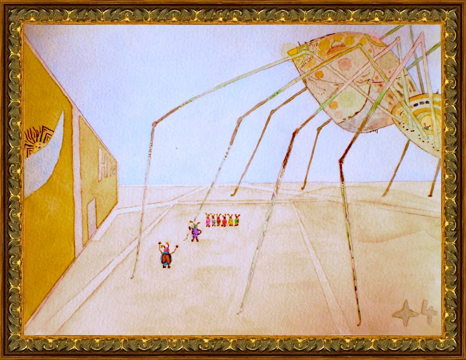
Selten genug
181˚⋀⋁∷∷˚
Oft die weiblich’ Lust, dem Manne nicht geheuer,
so gerne dann erinnert, an ein möglich’ Fegefeuer.
Doch Feuer, gibt es nur im Leben, genug uns selten,
dieser eigen Funke, wo erst als Mensch, darfst gelten.
✺ Alle Gedichte sowie Aquarelle, geschrieben und gemalt von mir, Mario Mihalić ✺
⚶ Die Mail Adresse sich bitte bei Bedarf von Hand eingeben ⚶
Programme & BS
⋁∑∑⋀
⊲ Wollte diese Website durch folgende Software erstellen ⊳
⊶ Ein herzlich' Dankeschön ⊷
≪ Allen Code.erinnen und Code.ern dieser Programme & Betriebs-Systeme ≫
✺ Diese Website ist eine Stern 4 +EERM+ Desktop-Website von 1409 Pixeln Breite ✺ ✺ Ethisch Emotionales Raumzeit Modul ✺ ✺ Alle Inhalte dieser Anbindung sind quelloffen 🌱 frei ✺ ✺ Diese Website wurde Ihnen durch einen Github Server zugestellt ✺ ✺ Die gleichen Verse sind nun auch gut unter https://mihalic.ch bei Hoststar erreichbar ✺ ✺ Die Adressen werden durch den planetary intergalactic transmission sector S4☉EMM⚀42D4 gespeist ✺ ✺ Smomby Tipp 1 - Seite läuft am leichtesten durch den Opera Browser, schlägt Text dabei selbst beim zoomen um ✺ ✺ Smomby Tipp 2 - Starten Sie nicht alle Ani's zugleich, sofern ihr device nicht mächtig genug ist um sie flüssig darzustellen ✺
✺ Mein bestes 200 € Aquaris X Smartphone z.B. will auf einem Lineage Betriebssystem alle 10 Laufschriften, beide Blumen Ani's, Fahnen/Kerzen Ani's oben, Kubus/Kerzen Ani's unten, Windspiel Ani sowie das Youtube Video, je nach Browser, gut genug, also flüssig wie gleichzeitig darstellen ✺
✺ Sie könnten aber auch sich ein nicht propriäteres Betriebs system von einer freien software community schenken lassen.. so würde eine gütig' Ruhe in ihre Computer/Smartphones ziehen, da sich nunmehr hinter ihrem Bildschirm keine geheimen Funktionen Daten senden würden ✺
SZ = Satzzeichen für Sprachausgabe.prg.SZ = Satzzeichen für Sprachausgabe.prg.SZ = Satzzeichen für Sprachausgabe.prg.
☻
☻
G. Ein, A. Ein = Nur Verse mit Bildern / Ged.LED 1/2 G. Ein, A. Ein = Nur Verse mit Bildern / Ged.LED 1/2 G. Ein, A. Ein = Nur Verse mit Bildern / Ged.LED 1/2